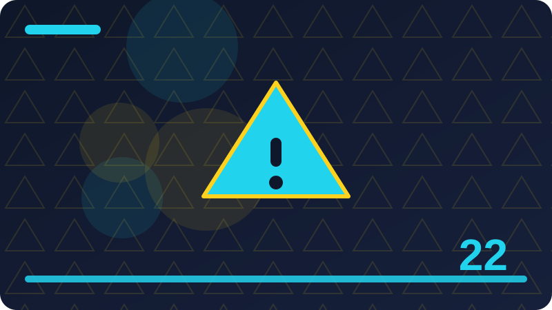

Chapter 22: Error Handling: do, try and catch

Section 1: What an Error Is
An error is a problem your program can recognise and respond to, rather than a crash that ends everything without explanation. A missing file, a broken network connection, or an invalid password are all errors: they are expected possibilities, not impossible surprises. Swift's error handling gives you a structured way to say that a function might fail, to describe how it failed, and to let the caller decide what to do. That structure is what separates a robust program from one that only works on a perfect day.
Think of what an error is as a way of giving a name to an idea that your program already uses, so the idea is easy to recognise when you meet it again later. When you read code that uses what an error is, slow down and ask what choice is being made, what information travels with that choice, and what should happen for each possible outcome. That habit turns a short example into a mental model you can reuse. You do not need to remember every detail at once. Start with the simplest case, run it, and then add one small variation. Each variation teaches you something the definition alone cannot, because you see the result change in front of you.
enum FileError: Error {
case notFound
}
func readFile() throws -> String {
throw FileError.notFound
}
print("Ready to handle errors")Before you look at the code, say in plain words what you expect it to do. Then read it line by line and match each line to that expectation. If a line surprises you, that surprise is useful: it shows exactly where your picture of what an error is differs from how Swift actually works. Change one value, run the example again in your head or in a playground, and notice what stays the same and what changes. This small experiment habit is how beginners become confident programmers, because confidence comes from tested understanding rather than from memorising rules.
A common mistake with what an error is is to rush past the simple case and try to combine several new ideas at once. When the result is wrong, it is then hard to tell which idea caused the problem. Keep your first attempt small and clear, even if it looks too easy. Give your values honest names, keep each step on its own line where that helps, and check the result before you add the next feature. If you get stuck, explain the code out loud as if you were teaching a friend. The sentence where you hesitate usually points to the part you need to practise again.
To make what an error is stick, try a tiny task of your own after this section. Invent a small example from everyday life, write the code for it, and predict the output before you run it. Then compare your prediction with the real result and write down, in one sentence, what you learned from any difference. Over time, those small sentences build a personal guide that is far more useful than notes copied from someone else. Good Swift code is not clever code. It is code that a future reader, including your future self, can follow without guessing.
Check: What makes a problem an error rather than a crash?
Section 2: Errors as Enum Cases
In Swift, errors are usually described by an enum that conforms to the Error protocol, with one case for each kind of failure. This design reuses everything you learned about enums: each failure has a name, and cases that need detail can carry associated values, such as the name of a missing file. Conforming to Error is a marker that tells Swift this enum is meant to be thrown and caught. A well-designed error enum reads like a list of honest possibilities, not a vague message.
Think of errors as enum cases as a way of giving a name to an idea that your program already uses, so the idea is easy to recognise when you meet it again later. When you read code that uses errors as enum cases, slow down and ask what choice is being made, what information travels with that choice, and what should happen for each possible outcome. That habit turns a short example into a mental model you can reuse. You do not need to remember every detail at once. Start with the simplest case, run it, and then add one small variation. Each variation teaches you something the definition alone cannot, because you see the result change in front of you.
enum LoginError: Error {
case wrongPassword
case accountLocked
}
print(LoginError.wrongPassword)Before you look at the code, say in plain words what you expect it to do. Then read it line by line and match each line to that expectation. If a line surprises you, that surprise is useful: it shows exactly where your picture of errors as enum cases differs from how Swift actually works. Change one value, run the example again in your head or in a playground, and notice what stays the same and what changes. This small experiment habit is how beginners become confident programmers, because confidence comes from tested understanding rather than from memorising rules.
A common mistake with errors as enum cases is to rush past the simple case and try to combine several new ideas at once. When the result is wrong, it is then hard to tell which idea caused the problem. Keep your first attempt small and clear, even if it looks too easy. Give your values honest names, keep each step on its own line where that helps, and check the result before you add the next feature. If you get stuck, explain the code out loud as if you were teaching a friend. The sentence where you hesitate usually points to the part you need to practise again.
To make errors as enum cases stick, try a tiny task of your own after this section. Invent a small example from everyday life, write the code for it, and predict the output before you run it. Then compare your prediction with the real result and write down, in one sentence, what you learned from any difference. Over time, those small sentences build a personal guide that is far more useful than notes copied from someone else. Good Swift code is not clever code. It is code that a future reader, including your future self, can follow without guessing.
Check: Why are errors usually modelled as enums in Swift?
Section 3: The throws Keyword
A function that might fail is marked with the throws keyword, placed after its parameter list and before its return type. That single word is a promise and a warning: the function may return a value, or it may throw an error instead. Callers must acknowledge that possibility, which means errors cannot be silently ignored by accident. Marking a function as throws is therefore a design decision, not just syntax, because it tells every future reader that failure is part of this function's job.
Think of the throws keyword as a way of giving a name to an idea that your program already uses, so the idea is easy to recognise when you meet it again later. When you read code that uses the throws keyword, slow down and ask what choice is being made, what information travels with that choice, and what should happen for each possible outcome. That habit turns a short example into a mental model you can reuse. You do not need to remember every detail at once. Start with the simplest case, run it, and then add one small variation. Each variation teaches you something the definition alone cannot, because you see the result change in front of you.
func divide(_ a: Int, by b: Int) throws -> Int {
if b == 0 { throw MathError.divideByZero }
return a / b
}
enum MathError: Error {
case divideByZero
}Before you look at the code, say in plain words what you expect it to do. Then read it line by line and match each line to that expectation. If a line surprises you, that surprise is useful: it shows exactly where your picture of the throws keyword differs from how Swift actually works. Change one value, run the example again in your head or in a playground, and notice what stays the same and what changes. This small experiment habit is how beginners become confident programmers, because confidence comes from tested understanding rather than from memorising rules.
A common mistake with the throws keyword is to rush past the simple case and try to combine several new ideas at once. When the result is wrong, it is then hard to tell which idea caused the problem. Keep your first attempt small and clear, even if it looks too easy. Give your values honest names, keep each step on its own line where that helps, and check the result before you add the next feature. If you get stuck, explain the code out loud as if you were teaching a friend. The sentence where you hesitate usually points to the part you need to practise again.
To make the throws keyword stick, try a tiny task of your own after this section. Invent a small example from everyday life, write the code for it, and predict the output before you run it. Then compare your prediction with the real result and write down, in one sentence, what you learned from any difference. Over time, those small sentences build a personal guide that is far more useful than notes copied from someone else. Good Swift code is not clever code. It is code that a future reader, including your future self, can follow without guessing.
Check: Where does throws go in a function declaration, and what does it promise?
Section 4: Throwing an Error
To throw an error, you write throw followed by an error value, usually an enum case. Throwing immediately stops the current function and hands control to the nearest code that is prepared to catch the error, skipping the rest of the function. That is why code after a throw only runs when no error occurred: the throw is an exit, not a return value. You should throw as soon as you know something has gone wrong, with the most specific case you have, so the caller gets useful information.
Think of throwing an error as a way of giving a name to an idea that your program already uses, so the idea is easy to recognise when you meet it again later. When you read code that uses throwing an error, slow down and ask what choice is being made, what information travels with that choice, and what should happen for each possible outcome. That habit turns a short example into a mental model you can reuse. You do not need to remember every detail at once. Start with the simplest case, run it, and then add one small variation. Each variation teaches you something the definition alone cannot, because you see the result change in front of you.
enum MathError: Error {
case divideByZero
}
func divide(_ a: Int, by b: Int) throws -> Int {
guard b != 0 else { throw MathError.divideByZero }
return a / b
}Before you look at the code, say in plain words what you expect it to do. Then read it line by line and match each line to that expectation. If a line surprises you, that surprise is useful: it shows exactly where your picture of throwing an error differs from how Swift actually works. Change one value, run the example again in your head or in a playground, and notice what stays the same and what changes. This small experiment habit is how beginners become confident programmers, because confidence comes from tested understanding rather than from memorising rules.
A common mistake with throwing an error is to rush past the simple case and try to combine several new ideas at once. When the result is wrong, it is then hard to tell which idea caused the problem. Keep your first attempt small and clear, even if it looks too easy. Give your values honest names, keep each step on its own line where that helps, and check the result before you add the next feature. If you get stuck, explain the code out loud as if you were teaching a friend. The sentence where you hesitate usually points to the part you need to practise again.
To make throwing an error stick, try a tiny task of your own after this section. Invent a small example from everyday life, write the code for it, and predict the output before you run it. Then compare your prediction with the real result and write down, in one sentence, what you learned from any difference. Over time, those small sentences build a personal guide that is far more useful than notes copied from someone else. Good Swift code is not clever code. It is code that a future reader, including your future self, can follow without guessing.
Check: What happens to a function the moment it throws?
Section 5: Calling a Throwing Function with try
A call to a throwing function must be marked with try, which is Swift's way of making the risk visible at the call site. Writing try does not handle the error by itself; it simply acknowledges that this call might throw and that the surrounding code takes responsibility for that possibility. That visibility matters, because a reader scanning the code can spot every risky call without reading the function definition. Try is therefore a signpost, not a solution, and it always appears together with do-catch, try?, or try!.
Think of calling a throwing function with try as a way of giving a name to an idea that your program already uses, so the idea is easy to recognise when you meet it again later. When you read code that uses calling a throwing function with try, slow down and ask what choice is being made, what information travels with that choice, and what should happen for each possible outcome. That habit turns a short example into a mental model you can reuse. You do not need to remember every detail at once. Start with the simplest case, run it, and then add one small variation. Each variation teaches you something the definition alone cannot, because you see the result change in front of you.
enum MathError: Error {
case divideByZero
}
func divide(_ a: Int, by b: Int) throws -> Int {
guard b != 0 else { throw MathError.divideByZero }
return a / b
}
do {
let result = try divide(10, by: 2)
print(result)
} catch {
print("Something went wrong")
}Before you look at the code, say in plain words what you expect it to do. Then read it line by line and match each line to that expectation. If a line surprises you, that surprise is useful: it shows exactly where your picture of calling a throwing function with try differs from how Swift actually works. Change one value, run the example again in your head or in a playground, and notice what stays the same and what changes. This small experiment habit is how beginners become confident programmers, because confidence comes from tested understanding rather than from memorising rules.
A common mistake with calling a throwing function with try is to rush past the simple case and try to combine several new ideas at once. When the result is wrong, it is then hard to tell which idea caused the problem. Keep your first attempt small and clear, even if it looks too easy. Give your values honest names, keep each step on its own line where that helps, and check the result before you add the next feature. If you get stuck, explain the code out loud as if you were teaching a friend. The sentence where you hesitate usually points to the part you need to practise again.
To make calling a throwing function with try stick, try a tiny task of your own after this section. Invent a small example from everyday life, write the code for it, and predict the output before you run it. Then compare your prediction with the real result and write down, in one sentence, what you learned from any difference. Over time, those small sentences build a personal guide that is far more useful than notes copied from someone else. Good Swift code is not clever code. It is code that a future reader, including your future self, can follow without guessing.
Check: What does try actually do, and what does it not do?
Section 6: do and catch in Plain Words
A do block groups code that might throw, and the catch blocks that follow it say what to do when an error escapes. Think of do as saying try this plan, and catch as saying if it fails in this way, do this instead. The code inside do runs normally until a throw happens, at which point Swift jumps to the first matching catch. If no error occurs, the catch blocks are skipped entirely, so the happy path stays clean and the failure handling stays separate and visible.
Think of do and catch in plain words as a way of giving a name to an idea that your program already uses, so the idea is easy to recognise when you meet it again later. When you read code that uses do and catch in plain words, slow down and ask what choice is being made, what information travels with that choice, and what should happen for each possible outcome. That habit turns a short example into a mental model you can reuse. You do not need to remember every detail at once. Start with the simplest case, run it, and then add one small variation. Each variation teaches you something the definition alone cannot, because you see the result change in front of you.
enum MathError: Error {
case divideByZero
}
func divide(_ a: Int, by b: Int) throws -> Int {
guard b != 0 else { throw MathError.divideByZero }
return a / b
}
do {
print(try divide(10, by: 0))
} catch {
print("Could not divide")
}Before you look at the code, say in plain words what you expect it to do. Then read it line by line and match each line to that expectation. If a line surprises you, that surprise is useful: it shows exactly where your picture of do and catch in plain words differs from how Swift actually works. Change one value, run the example again in your head or in a playground, and notice what stays the same and what changes. This small experiment habit is how beginners become confident programmers, because confidence comes from tested understanding rather than from memorising rules.
A common mistake with do and catch in plain words is to rush past the simple case and try to combine several new ideas at once. When the result is wrong, it is then hard to tell which idea caused the problem. Keep your first attempt small and clear, even if it looks too easy. Give your values honest names, keep each step on its own line where that helps, and check the result before you add the next feature. If you get stuck, explain the code out loud as if you were teaching a friend. The sentence where you hesitate usually points to the part you need to practise again.
To make do and catch in plain words stick, try a tiny task of your own after this section. Invent a small example from everyday life, write the code for it, and predict the output before you run it. Then compare your prediction with the real result and write down, in one sentence, what you learned from any difference. Over time, those small sentences build a personal guide that is far more useful than notes copied from someone else. Good Swift code is not clever code. It is code that a future reader, including your future self, can follow without guessing.
Check: How do do and catch divide a program into a plan and its backup plans?
Section 7: Your First Complete do-catch
A complete do-catch example has three parts: a throwing function, a do block that calls it with try, and at least one catch that responds to failure. Start by writing the happy path inside do, then decide what the catch should do, such as printing a friendly message, using a fallback value, or asking the user to try again. Resist the temptation to leave catch empty: an empty catch hides failures and makes debugging painful. Even a simple printed message is better than silence, because it proves the failure path was considered.
Think of your first complete do-catch as a way of giving a name to an idea that your program already uses, so the idea is easy to recognise when you meet it again later. When you read code that uses your first complete do-catch, slow down and ask what choice is being made, what information travels with that choice, and what should happen for each possible outcome. That habit turns a short example into a mental model you can reuse. You do not need to remember every detail at once. Start with the simplest case, run it, and then add one small variation. Each variation teaches you something the definition alone cannot, because you see the result change in front of you.
enum FileError: Error {
case notFound
}
func load() throws -> String {
throw FileError.notFound
}
do {
let text = try load()
print(text)
} catch {
print("File could not be loaded")
}Before you look at the code, say in plain words what you expect it to do. Then read it line by line and match each line to that expectation. If a line surprises you, that surprise is useful: it shows exactly where your picture of your first complete do-catch differs from how Swift actually works. Change one value, run the example again in your head or in a playground, and notice what stays the same and what changes. This small experiment habit is how beginners become confident programmers, because confidence comes from tested understanding rather than from memorising rules.
A common mistake with your first complete do-catch is to rush past the simple case and try to combine several new ideas at once. When the result is wrong, it is then hard to tell which idea caused the problem. Keep your first attempt small and clear, even if it looks too easy. Give your values honest names, keep each step on its own line where that helps, and check the result before you add the next feature. If you get stuck, explain the code out loud as if you were teaching a friend. The sentence where you hesitate usually points to the part you need to practise again.
To make your first complete do-catch stick, try a tiny task of your own after this section. Invent a small example from everyday life, write the code for it, and predict the output before you run it. Then compare your prediction with the real result and write down, in one sentence, what you learned from any difference. Over time, those small sentences build a personal guide that is far more useful than notes copied from someone else. Good Swift code is not clever code. It is code that a future reader, including your future self, can follow without guessing.
Check: What three parts does a complete do-catch example need?
Section 8: Catching a Specific Error
A bare catch handles every error the same way, which is fine for a first example but too blunt for real programs. To respond differently to different failures, you write catch with a pattern, such as catch FileError.notFound, and Swift runs that block only when the thrown error matches. More specific catches come first, and a general catch can sit last as a safety net. This ordering mirrors how you would help a person: first try the specific remedy, and only then fall back to a general one.
Think of catching a specific error as a way of giving a name to an idea that your program already uses, so the idea is easy to recognise when you meet it again later. When you read code that uses catching a specific error, slow down and ask what choice is being made, what information travels with that choice, and what should happen for each possible outcome. That habit turns a short example into a mental model you can reuse. You do not need to remember every detail at once. Start with the simplest case, run it, and then add one small variation. Each variation teaches you something the definition alone cannot, because you see the result change in front of you.
enum FileError: Error {
case notFound
case noPermission
}
func load() throws -> String {
throw FileError.notFound
}
do {
print(try load())
} catch FileError.notFound {
print("That file does not exist")
} catch {
print("Another file problem")
}Before you look at the code, say in plain words what you expect it to do. Then read it line by line and match each line to that expectation. If a line surprises you, that surprise is useful: it shows exactly where your picture of catching a specific error differs from how Swift actually works. Change one value, run the example again in your head or in a playground, and notice what stays the same and what changes. This small experiment habit is how beginners become confident programmers, because confidence comes from tested understanding rather than from memorising rules.
A common mistake with catching a specific error is to rush past the simple case and try to combine several new ideas at once. When the result is wrong, it is then hard to tell which idea caused the problem. Keep your first attempt small and clear, even if it looks too easy. Give your values honest names, keep each step on its own line where that helps, and check the result before you add the next feature. If you get stuck, explain the code out loud as if you were teaching a friend. The sentence where you hesitate usually points to the part you need to practise again.
To make catching a specific error stick, try a tiny task of your own after this section. Invent a small example from everyday life, write the code for it, and predict the output before you run it. Then compare your prediction with the real result and write down, in one sentence, what you learned from any difference. Over time, those small sentences build a personal guide that is far more useful than notes copied from someone else. Good Swift code is not clever code. It is code that a future reader, including your future self, can follow without guessing.
Check: Why should specific catch blocks come before a general catch?
Section 9: Catching with Associated Values
When an error case carries an associated value, a catch pattern can bind that value and use it in the response, for example by printing the name of the missing file. You write catch FileError.notFound(let name) and then use name inside the block, which gives the user a precise message instead of a generic one. This is the same pattern matching you learned for enums, applied to errors, and it is one of the strongest reasons to give error cases associated values. A precise message helps the user fix the problem, while a vague message only tells them that something failed.
Think of catching with associated values as a way of giving a name to an idea that your program already uses, so the idea is easy to recognise when you meet it again later. When you read code that uses catching with associated values, slow down and ask what choice is being made, what information travels with that choice, and what should happen for each possible outcome. That habit turns a short example into a mental model you can reuse. You do not need to remember every detail at once. Start with the simplest case, run it, and then add one small variation. Each variation teaches you something the definition alone cannot, because you see the result change in front of you.
enum FileError: Error {
case notFound(String)
}
func load() throws -> String {
throw FileError.notFound("notes.txt")
}
do {
print(try load())
} catch FileError.notFound(let name) {
print("Missing file: \(name)")
} catch {
print("Another problem")
}Before you look at the code, say in plain words what you expect it to do. Then read it line by line and match each line to that expectation. If a line surprises you, that surprise is useful: it shows exactly where your picture of catching with associated values differs from how Swift actually works. Change one value, run the example again in your head or in a playground, and notice what stays the same and what changes. This small experiment habit is how beginners become confident programmers, because confidence comes from tested understanding rather than from memorising rules.
A common mistake with catching with associated values is to rush past the simple case and try to combine several new ideas at once. When the result is wrong, it is then hard to tell which idea caused the problem. Keep your first attempt small and clear, even if it looks too easy. Give your values honest names, keep each step on its own line where that helps, and check the result before you add the next feature. If you get stuck, explain the code out loud as if you were teaching a friend. The sentence where you hesitate usually points to the part you need to practise again.
To make catching with associated values stick, try a tiny task of your own after this section. Invent a small example from everyday life, write the code for it, and predict the output before you run it. Then compare your prediction with the real result and write down, in one sentence, what you learned from any difference. Over time, those small sentences build a personal guide that is far more useful than notes copied from someone else. Good Swift code is not clever code. It is code that a future reader, including your future self, can follow without guessing.
Check: How does a catch block use an error's associated value?
Section 10: The Catch-All Error Variable
In a catch block without a pattern, Swift provides a variable called error that holds whatever was thrown. You can print it, inspect its type, or pass it to a logging function, which is useful while you are learning or debugging. The default message for a simple enum error is its case name, which is readable but not user-friendly, so for real messages you will usually switch over the error or catch specific cases. Still, knowing about error gives you a quick way to see what went wrong during development.
Think of the catch-all error variable as a way of giving a name to an idea that your program already uses, so the idea is easy to recognise when you meet it again later. When you read code that uses the catch-all error variable, slow down and ask what choice is being made, what information travels with that choice, and what should happen for each possible outcome. That habit turns a short example into a mental model you can reuse. You do not need to remember every detail at once. Start with the simplest case, run it, and then add one small variation. Each variation teaches you something the definition alone cannot, because you see the result change in front of you.
enum FileError: Error {
case notFound
}
func load() throws -> String {
throw FileError.notFound
}
do {
print(try load())
} catch {
print("Failed with error: \(error)")
}Before you look at the code, say in plain words what you expect it to do. Then read it line by line and match each line to that expectation. If a line surprises you, that surprise is useful: it shows exactly where your picture of the catch-all error variable differs from how Swift actually works. Change one value, run the example again in your head or in a playground, and notice what stays the same and what changes. This small experiment habit is how beginners become confident programmers, because confidence comes from tested understanding rather than from memorising rules.
A common mistake with the catch-all error variable is to rush past the simple case and try to combine several new ideas at once. When the result is wrong, it is then hard to tell which idea caused the problem. Keep your first attempt small and clear, even if it looks too easy. Give your values honest names, keep each step on its own line where that helps, and check the result before you add the next feature. If you get stuck, explain the code out loud as if you were teaching a friend. The sentence where you hesitate usually points to the part you need to practise again.
To make the catch-all error variable stick, try a tiny task of your own after this section. Invent a small example from everyday life, write the code for it, and predict the output before you run it. Then compare your prediction with the real result and write down, in one sentence, what you learned from any difference. Over time, those small sentences build a personal guide that is far more useful than notes copied from someone else. Good Swift code is not clever code. It is code that a future reader, including your future self, can follow without guessing.
Check: What is the error variable available in a catch block?
Section 11: Multiple Catch Blocks
Multiple catch blocks let you write a different response for each kind of failure, in order from most specific to most general. Swift tries them in the order you write them and runs the first one that matches, so a general catch placed first would swallow every error and make the later blocks unreachable. Think of the list as a series of questions: is it this failure, is it that failure, or is it something else entirely? Keeping the order honest is essential, and the compiler will warn you about unreachable catches.
Think of multiple catch blocks as a way of giving a name to an idea that your program already uses, so the idea is easy to recognise when you meet it again later. When you read code that uses multiple catch blocks, slow down and ask what choice is being made, what information travels with that choice, and what should happen for each possible outcome. That habit turns a short example into a mental model you can reuse. You do not need to remember every detail at once. Start with the simplest case, run it, and then add one small variation. Each variation teaches you something the definition alone cannot, because you see the result change in front of you.
enum LoadError: Error {
case notFound
case empty
}
func load() throws -> String {
throw LoadError.empty
}
do {
print(try load())
} catch LoadError.notFound {
print("File missing")
} catch LoadError.empty {
print("File is empty")
} catch {
print("Unknown load problem")
}Before you look at the code, say in plain words what you expect it to do. Then read it line by line and match each line to that expectation. If a line surprises you, that surprise is useful: it shows exactly where your picture of multiple catch blocks differs from how Swift actually works. Change one value, run the example again in your head or in a playground, and notice what stays the same and what changes. This small experiment habit is how beginners become confident programmers, because confidence comes from tested understanding rather than from memorising rules.
A common mistake with multiple catch blocks is to rush past the simple case and try to combine several new ideas at once. When the result is wrong, it is then hard to tell which idea caused the problem. Keep your first attempt small and clear, even if it looks too easy. Give your values honest names, keep each step on its own line where that helps, and check the result before you add the next feature. If you get stuck, explain the code out loud as if you were teaching a friend. The sentence where you hesitate usually points to the part you need to practise again.
To make multiple catch blocks stick, try a tiny task of your own after this section. Invent a small example from everyday life, write the code for it, and predict the output before you run it. Then compare your prediction with the real result and write down, in one sentence, what you learned from any difference. Over time, those small sentences build a personal guide that is far more useful than notes copied from someone else. Good Swift code is not clever code. It is code that a future reader, including your future self, can follow without guessing.
Check: In what order should multiple catch blocks be written, and why?
Section 12: Errors and Optional Results
Sometimes a function that might fail is better expressed as returning an optional, especially when failure is routine and carries no useful detail, such as looking up a word that may not exist. Errors are better when the caller needs to know why something failed, or when there are several distinct failures to distinguish. Choosing between throws and an optional is therefore a design question: ask whether the reason for failure matters to the caller. If it does, throw a descriptive error; if it does not, an optional keeps the code simpler.
Think of errors and optional results as a way of giving a name to an idea that your program already uses, so the idea is easy to recognise when you meet it again later. When you read code that uses errors and optional results, slow down and ask what choice is being made, what information travels with that choice, and what should happen for each possible outcome. That habit turns a short example into a mental model you can reuse. You do not need to remember every detail at once. Start with the simplest case, run it, and then add one small variation. Each variation teaches you something the definition alone cannot, because you see the result change in front of you.
func find(_ word: String, in list: [String]) -> String? {
return list.first { $0 == word }
}
print(find("swift", in: ["swift", "kotlin"]) ?? "Not found")Before you look at the code, say in plain words what you expect it to do. Then read it line by line and match each line to that expectation. If a line surprises you, that surprise is useful: it shows exactly where your picture of errors and optional results differs from how Swift actually works. Change one value, run the example again in your head or in a playground, and notice what stays the same and what changes. This small experiment habit is how beginners become confident programmers, because confidence comes from tested understanding rather than from memorising rules.
A common mistake with errors and optional results is to rush past the simple case and try to combine several new ideas at once. When the result is wrong, it is then hard to tell which idea caused the problem. Keep your first attempt small and clear, even if it looks too easy. Give your values honest names, keep each step on its own line where that helps, and check the result before you add the next feature. If you get stuck, explain the code out loud as if you were teaching a friend. The sentence where you hesitate usually points to the part you need to practise again.
To make errors and optional results stick, try a tiny task of your own after this section. Invent a small example from everyday life, write the code for it, and predict the output before you run it. Then compare your prediction with the real result and write down, in one sentence, what you learned from any difference. Over time, those small sentences build a personal guide that is far more useful than notes copied from someone else. Good Swift code is not clever code. It is code that a future reader, including your future self, can follow without guessing.
Check: When is an optional a better choice than a thrown error?
Section 13: try? Turning Errors into Optionals
The try? keyword calls a throwing function and turns its result into an optional: success becomes a wrapped value, and any error becomes nil. This is convenient when you only care whether something worked, not why it failed, such as trying to read an optional configuration file. The trade-off is that the reason is discarded, so try? is a poor choice when the user needs a helpful message or when different failures need different responses. Use it deliberately, and prefer do-catch when the reason matters.
Think of try? turning errors into optionals as a way of giving a name to an idea that your program already uses, so the idea is easy to recognise when you meet it again later. When you read code that uses try? turning errors into optionals, slow down and ask what choice is being made, what information travels with that choice, and what should happen for each possible outcome. That habit turns a short example into a mental model you can reuse. You do not need to remember every detail at once. Start with the simplest case, run it, and then add one small variation. Each variation teaches you something the definition alone cannot, because you see the result change in front of you.
enum MathError: Error {
case divideByZero
}
func divide(_ a: Int, by b: Int) throws -> Int {
guard b != 0 else { throw MathError.divideByZero }
return a / b
}
let result = try? divide(10, by: 0)
print(result ?? "No result")Before you look at the code, say in plain words what you expect it to do. Then read it line by line and match each line to that expectation. If a line surprises you, that surprise is useful: it shows exactly where your picture of try? turning errors into optionals differs from how Swift actually works. Change one value, run the example again in your head or in a playground, and notice what stays the same and what changes. This small experiment habit is how beginners become confident programmers, because confidence comes from tested understanding rather than from memorising rules.
A common mistake with try? turning errors into optionals is to rush past the simple case and try to combine several new ideas at once. When the result is wrong, it is then hard to tell which idea caused the problem. Keep your first attempt small and clear, even if it looks too easy. Give your values honest names, keep each step on its own line where that helps, and check the result before you add the next feature. If you get stuck, explain the code out loud as if you were teaching a friend. The sentence where you hesitate usually points to the part you need to practise again.
To make try? turning errors into optionals stick, try a tiny task of your own after this section. Invent a small example from everyday life, write the code for it, and predict the output before you run it. Then compare your prediction with the real result and write down, in one sentence, what you learned from any difference. Over time, those small sentences build a personal guide that is far more useful than notes copied from someone else. Good Swift code is not clever code. It is code that a future reader, including your future self, can follow without guessing.
Check: What does try? do to an error, and what information is lost?
Section 14: try! and When Never to Use It
The try! keyword tells Swift that you are certain a call cannot fail, and it crashes the program if you are wrong. There are rare legitimate uses, such as loading a file that is bundled with your app and must exist, but in most code try! is a danger sign. Beginners should treat it as a last resort and ask whether a do-catch or try? would be safer. A crash is the worst user experience for a predictable failure, and try! turns a handleable error into exactly that. If you use it, leave a comment explaining why failure is impossible.
Think of try! and when never to use it as a way of giving a name to an idea that your program already uses, so the idea is easy to recognise when you meet it again later. When you read code that uses try! and when never to use it, slow down and ask what choice is being made, what information travels with that choice, and what should happen for each possible outcome. That habit turns a short example into a mental model you can reuse. You do not need to remember every detail at once. Start with the simplest case, run it, and then add one small variation. Each variation teaches you something the definition alone cannot, because you see the result change in front of you.
enum MathError: Error {
case divideByZero
}
func divide(_ a: Int, by b: Int) throws -> Int {
guard b != 0 else { throw MathError.divideByZero }
return a / b
}
let result = try! divide(10, by: 2)
print(result)Before you look at the code, say in plain words what you expect it to do. Then read it line by line and match each line to that expectation. If a line surprises you, that surprise is useful: it shows exactly where your picture of try! and when never to use it differs from how Swift actually works. Change one value, run the example again in your head or in a playground, and notice what stays the same and what changes. This small experiment habit is how beginners become confident programmers, because confidence comes from tested understanding rather than from memorising rules.
A common mistake with try! and when never to use it is to rush past the simple case and try to combine several new ideas at once. When the result is wrong, it is then hard to tell which idea caused the problem. Keep your first attempt small and clear, even if it looks too easy. Give your values honest names, keep each step on its own line where that helps, and check the result before you add the next feature. If you get stuck, explain the code out loud as if you were teaching a friend. The sentence where you hesitate usually points to the part you need to practise again.
To make try! and when never to use it stick, try a tiny task of your own after this section. Invent a small example from everyday life, write the code for it, and predict the output before you run it. Then compare your prediction with the real result and write down, in one sentence, what you learned from any difference. Over time, those small sentences build a personal guide that is far more useful than notes copied from someone else. Good Swift code is not clever code. It is code that a future reader, including your future self, can follow without guessing.
Check: Why is try! dangerous, and when might it be acceptable?
Section 15: Propagating Errors Upwards
A function does not have to catch every error itself; it can be marked throws and let the error travel upwards to its caller. This is called propagation, and it is how errors reach the part of the program that actually knows what to do about them. A low-level file reader, for example, should not decide how to show an error to a user, so it throws and lets a higher layer catch. Propagation keeps each layer focused: lower layers detect problems, higher layers decide responses.
Think of propagating errors upwards as a way of giving a name to an idea that your program already uses, so the idea is easy to recognise when you meet it again later. When you read code that uses propagating errors upwards, slow down and ask what choice is being made, what information travels with that choice, and what should happen for each possible outcome. That habit turns a short example into a mental model you can reuse. You do not need to remember every detail at once. Start with the simplest case, run it, and then add one small variation. Each variation teaches you something the definition alone cannot, because you see the result change in front of you.
enum FileError: Error {
case notFound
}
func read() throws -> String {
throw FileError.notFound
}
func loadDocument() throws -> String {
return try read()
}Before you look at the code, say in plain words what you expect it to do. Then read it line by line and match each line to that expectation. If a line surprises you, that surprise is useful: it shows exactly where your picture of propagating errors upwards differs from how Swift actually works. Change one value, run the example again in your head or in a playground, and notice what stays the same and what changes. This small experiment habit is how beginners become confident programmers, because confidence comes from tested understanding rather than from memorising rules.
A common mistake with propagating errors upwards is to rush past the simple case and try to combine several new ideas at once. When the result is wrong, it is then hard to tell which idea caused the problem. Keep your first attempt small and clear, even if it looks too easy. Give your values honest names, keep each step on its own line where that helps, and check the result before you add the next feature. If you get stuck, explain the code out loud as if you were teaching a friend. The sentence where you hesitate usually points to the part you need to practise again.
To make propagating errors upwards stick, try a tiny task of your own after this section. Invent a small example from everyday life, write the code for it, and predict the output before you run it. Then compare your prediction with the real result and write down, in one sentence, what you learned from any difference. Over time, those small sentences build a personal guide that is far more useful than notes copied from someone else. Good Swift code is not clever code. It is code that a future reader, including your future self, can follow without guessing.
Check: What does it mean for a function to propagate an error?
Section 16: Rethrows and Higher-Order Functions
A function that takes a throwing closure as a parameter is often marked rethrows, which means it only throws if the closure it was given throws. This lets higher-order functions such as map-like helpers work with both throwing and non-throwing closures, without forcing every caller to handle errors. You will meet rethrows again with collections, where a transforming function should only fail when the transformation itself fails. For now, remember the idea: rethrows passes the throwing behaviour through, rather than inventing new errors of its own.
Think of rethrows and higher-order functions as a way of giving a name to an idea that your program already uses, so the idea is easy to recognise when you meet it again later. When you read code that uses rethrows and higher-order functions, slow down and ask what choice is being made, what information travels with that choice, and what should happen for each possible outcome. That habit turns a short example into a mental model you can reuse. You do not need to remember every detail at once. Start with the simplest case, run it, and then add one small variation. Each variation teaches you something the definition alone cannot, because you see the result change in front of you.
func apply(_ work: () throws -> String) rethrows -> String {
return try work()
}
let text = try apply { "Done" }
print(text)Before you look at the code, say in plain words what you expect it to do. Then read it line by line and match each line to that expectation. If a line surprises you, that surprise is useful: it shows exactly where your picture of rethrows and higher-order functions differs from how Swift actually works. Change one value, run the example again in your head or in a playground, and notice what stays the same and what changes. This small experiment habit is how beginners become confident programmers, because confidence comes from tested understanding rather than from memorising rules.
A common mistake with rethrows and higher-order functions is to rush past the simple case and try to combine several new ideas at once. When the result is wrong, it is then hard to tell which idea caused the problem. Keep your first attempt small and clear, even if it looks too easy. Give your values honest names, keep each step on its own line where that helps, and check the result before you add the next feature. If you get stuck, explain the code out loud as if you were teaching a friend. The sentence where you hesitate usually points to the part you need to practise again.
To make rethrows and higher-order functions stick, try a tiny task of your own after this section. Invent a small example from everyday life, write the code for it, and predict the output before you run it. Then compare your prediction with the real result and write down, in one sentence, what you learned from any difference. Over time, those small sentences build a personal guide that is far more useful than notes copied from someone else. Good Swift code is not clever code. It is code that a future reader, including your future self, can follow without guessing.
Check: What does rethrows mean for a function that takes a closure?
Section 17: Throwing Initialisers
Initialisers can also throw, which is useful when an object should never exist in an invalid state. A username type, for example, might throw if the name is empty, so the only way to obtain one is with a valid name. You write init with throws, call it with try, and handle failure at the creation site. This pattern pushes validation to the boundary where the object is born, instead of checking the same condition in every method that uses it. It is a small design choice with a large effect on reliability.
Think of throwing initialisers as a way of giving a name to an idea that your program already uses, so the idea is easy to recognise when you meet it again later. When you read code that uses throwing initialisers, slow down and ask what choice is being made, what information travels with that choice, and what should happen for each possible outcome. That habit turns a short example into a mental model you can reuse. You do not need to remember every detail at once. Start with the simplest case, run it, and then add one small variation. Each variation teaches you something the definition alone cannot, because you see the result change in front of you.
enum NameError: Error {
case empty
}
struct Username {
var value: String
init(_ value: String) throws {
guard !value.isEmpty else { throw NameError.empty }
self.value = value
}
}
let name = try Username("kel")
print(name.value)Before you look at the code, say in plain words what you expect it to do. Then read it line by line and match each line to that expectation. If a line surprises you, that surprise is useful: it shows exactly where your picture of throwing initialisers differs from how Swift actually works. Change one value, run the example again in your head or in a playground, and notice what stays the same and what changes. This small experiment habit is how beginners become confident programmers, because confidence comes from tested understanding rather than from memorising rules.
A common mistake with throwing initialisers is to rush past the simple case and try to combine several new ideas at once. When the result is wrong, it is then hard to tell which idea caused the problem. Keep your first attempt small and clear, even if it looks too easy. Give your values honest names, keep each step on its own line where that helps, and check the result before you add the next feature. If you get stuck, explain the code out loud as if you were teaching a friend. The sentence where you hesitate usually points to the part you need to practise again.
To make throwing initialisers stick, try a tiny task of your own after this section. Invent a small example from everyday life, write the code for it, and predict the output before you run it. Then compare your prediction with the real result and write down, in one sentence, what you learned from any difference. Over time, those small sentences build a personal guide that is far more useful than notes copied from someone else. Good Swift code is not clever code. It is code that a future reader, including your future self, can follow without guessing.
Check: Why would an initialiser throw instead of accepting any value?
Section 18: Errors in Switch Statements
A switch over an error value works like a switch over any enum, letting you describe a response for each failure case in one place. This is often cleaner than a long chain of catch blocks when the error has already been caught and stored, or when you are formatting it for display. You can bind associated values, use where clauses for extra conditions, and rely on exhaustiveness to remind you when a new error case is added. Choosing between catch patterns and a switch is a matter of readability: use whichever makes the responses easier to follow.
Think of errors in switch statements as a way of giving a name to an idea that your program already uses, so the idea is easy to recognise when you meet it again later. When you read code that uses errors in switch statements, slow down and ask what choice is being made, what information travels with that choice, and what should happen for each possible outcome. That habit turns a short example into a mental model you can reuse. You do not need to remember every detail at once. Start with the simplest case, run it, and then add one small variation. Each variation teaches you something the definition alone cannot, because you see the result change in front of you.
enum FileError: Error {
case notFound(String)
case noPermission
}
func describe(_ error: FileError) -> String {
switch error {
case .notFound(let name): return "Missing: \(name)"
case .noPermission: return "No permission"
}
}
print(describe(.noPermission))Before you look at the code, say in plain words what you expect it to do. Then read it line by line and match each line to that expectation. If a line surprises you, that surprise is useful: it shows exactly where your picture of errors in switch statements differs from how Swift actually works. Change one value, run the example again in your head or in a playground, and notice what stays the same and what changes. This small experiment habit is how beginners become confident programmers, because confidence comes from tested understanding rather than from memorising rules.
A common mistake with errors in switch statements is to rush past the simple case and try to combine several new ideas at once. When the result is wrong, it is then hard to tell which idea caused the problem. Keep your first attempt small and clear, even if it looks too easy. Give your values honest names, keep each step on its own line where that helps, and check the result before you add the next feature. If you get stuck, explain the code out loud as if you were teaching a friend. The sentence where you hesitate usually points to the part you need to practise again.
To make errors in switch statements stick, try a tiny task of your own after this section. Invent a small example from everyday life, write the code for it, and predict the output before you run it. Then compare your prediction with the real result and write down, in one sentence, what you learned from any difference. Over time, those small sentences build a personal guide that is far more useful than notes copied from someone else. Good Swift code is not clever code. It is code that a future reader, including your future self, can follow without guessing.
Check: When is switching over an error clearer than several catch blocks?
Section 19: Throwing Functions and Return Values
A throwing function returns either its declared value or an error, never both, and never neither in the sense of a silent gap: the caller either receives the value or enters a catch block. This either-or contract is what makes throws reliable, because there is no in-between state where the caller holds a half-finished result. When you design a throwing function, think carefully about its return type on success and its error type on failure, since together they form the complete contract. A function that returns a value and also sets an error flag is doing the same job badly.
Think of throwing functions and return values as a way of giving a name to an idea that your program already uses, so the idea is easy to recognise when you meet it again later. When you read code that uses throwing functions and return values, slow down and ask what choice is being made, what information travels with that choice, and what should happen for each possible outcome. That habit turns a short example into a mental model you can reuse. You do not need to remember every detail at once. Start with the simplest case, run it, and then add one small variation. Each variation teaches you something the definition alone cannot, because you see the result change in front of you.
enum ReadError: Error {
case empty
}
func firstLine(of text: String) throws -> String {
guard let line = text.split(separator: "\n").first else { throw ReadError.empty }
return String(line)
}
print(try firstLine(of: "Hello\nWorld"))Before you look at the code, say in plain words what you expect it to do. Then read it line by line and match each line to that expectation. If a line surprises you, that surprise is useful: it shows exactly where your picture of throwing functions and return values differs from how Swift actually works. Change one value, run the example again in your head or in a playground, and notice what stays the same and what changes. This small experiment habit is how beginners become confident programmers, because confidence comes from tested understanding rather than from memorising rules.
A common mistake with throwing functions and return values is to rush past the simple case and try to combine several new ideas at once. When the result is wrong, it is then hard to tell which idea caused the problem. Keep your first attempt small and clear, even if it looks too easy. Give your values honest names, keep each step on its own line where that helps, and check the result before you add the next feature. If you get stuck, explain the code out loud as if you were teaching a friend. The sentence where you hesitate usually points to the part you need to practise again.
To make throwing functions and return values stick, try a tiny task of your own after this section. Invent a small example from everyday life, write the code for it, and predict the output before you run it. Then compare your prediction with the real result and write down, in one sentence, what you learned from any difference. Over time, those small sentences build a personal guide that is far more useful than notes copied from someone else. Good Swift code is not clever code. It is code that a future reader, including your future self, can follow without guessing.
Check: What are the only two outcomes of calling a throwing function?
Section 20: Guard and Throw Together
Guard and throw are a natural pair: guard checks a condition that must hold, and throw describes what went wrong when it does not. Writing guard b != 0 else { throw MathError.divideByZero } reads almost like a sentence, and it keeps the happy path unindented below the guard. This pattern appears constantly in validation code, where each guard handles one requirement and the main logic only runs when all requirements pass. Using guard for validation and throw for failure keeps both the check and the explanation in one visible place.
Think of guard and throw together as a way of giving a name to an idea that your program already uses, so the idea is easy to recognise when you meet it again later. When you read code that uses guard and throw together, slow down and ask what choice is being made, what information travels with that choice, and what should happen for each possible outcome. That habit turns a short example into a mental model you can reuse. You do not need to remember every detail at once. Start with the simplest case, run it, and then add one small variation. Each variation teaches you something the definition alone cannot, because you see the result change in front of you.
enum AgeError: Error {
case tooYoung
}
func checkAge(_ age: Int) throws {
guard age >= 13 else { throw AgeError.tooYoung }
print("Age OK")
}
try checkAge(20)Before you look at the code, say in plain words what you expect it to do. Then read it line by line and match each line to that expectation. If a line surprises you, that surprise is useful: it shows exactly where your picture of guard and throw together differs from how Swift actually works. Change one value, run the example again in your head or in a playground, and notice what stays the same and what changes. This small experiment habit is how beginners become confident programmers, because confidence comes from tested understanding rather than from memorising rules.
A common mistake with guard and throw together is to rush past the simple case and try to combine several new ideas at once. When the result is wrong, it is then hard to tell which idea caused the problem. Keep your first attempt small and clear, even if it looks too easy. Give your values honest names, keep each step on its own line where that helps, and check the result before you add the next feature. If you get stuck, explain the code out loud as if you were teaching a friend. The sentence where you hesitate usually points to the part you need to practise again.
To make guard and throw together stick, try a tiny task of your own after this section. Invent a small example from everyday life, write the code for it, and predict the output before you run it. Then compare your prediction with the real result and write down, in one sentence, what you learned from any difference. Over time, those small sentences build a personal guide that is far more useful than notes copied from someone else. Good Swift code is not clever code. It is code that a future reader, including your future self, can follow without guessing.
Check: Why do guard and throw work well together for validation?
Section 21: Error Handling in Loops
When a throwing call sits inside a loop, a single throw will exit the whole loop unless you catch inside it. If you want the loop to continue with the next item after a failure, put the do-catch inside the loop body, so each iteration has its own error handling. If instead one failure should stop the entire job, keep the do-catch outside the loop. The placement of do-catch therefore expresses your intention: inside means keep going, outside means stop at the first problem. Choosing deliberately avoids both silent skips and unwanted stops.
Think of error handling in loops as a way of giving a name to an idea that your program already uses, so the idea is easy to recognise when you meet it again later. When you read code that uses error handling in loops, slow down and ask what choice is being made, what information travels with that choice, and what should happen for each possible outcome. That habit turns a short example into a mental model you can reuse. You do not need to remember every detail at once. Start with the simplest case, run it, and then add one small variation. Each variation teaches you something the definition alone cannot, because you see the result change in front of you.
enum ItemError: Error {
case badItem(String)
}
func process(_ item: String) throws {
if item == "bad" { throw ItemError.badItem(item) }
print("Processed \(item)")
}
for item in ["a", "bad", "c"] {
do {
try process(item)
} catch {
print("Skipped a bad item")
}
}Before you look at the code, say in plain words what you expect it to do. Then read it line by line and match each line to that expectation. If a line surprises you, that surprise is useful: it shows exactly where your picture of error handling in loops differs from how Swift actually works. Change one value, run the example again in your head or in a playground, and notice what stays the same and what changes. This small experiment habit is how beginners become confident programmers, because confidence comes from tested understanding rather than from memorising rules.
A common mistake with error handling in loops is to rush past the simple case and try to combine several new ideas at once. When the result is wrong, it is then hard to tell which idea caused the problem. Keep your first attempt small and clear, even if it looks too easy. Give your values honest names, keep each step on its own line where that helps, and check the result before you add the next feature. If you get stuck, explain the code out loud as if you were teaching a friend. The sentence where you hesitate usually points to the part you need to practise again.
To make error handling in loops stick, try a tiny task of your own after this section. Invent a small example from everyday life, write the code for it, and predict the output before you run it. Then compare your prediction with the real result and write down, in one sentence, what you learned from any difference. Over time, those small sentences build a personal guide that is far more useful than notes copied from someone else. Good Swift code is not clever code. It is code that a future reader, including your future self, can follow without guessing.
Check: How does the placement of do-catch change a loop's behaviour on failure?
Section 22: Errors from User Input
User input is one of the most common sources of errors, because users type unexpected values, leave fields empty, or choose files that do not exist. Throwing functions are ideal for validation: a parser throws a specific error for each kind of bad input, and the caller turns that error into a friendly message. Never show a raw error case name to a user; translate it into plain language that says what went wrong and what to do next. Good input handling treats the user as a collaborator who made a mistake, not as an adversary to be scolded.
Think of errors from user input as a way of giving a name to an idea that your program already uses, so the idea is easy to recognise when you meet it again later. When you read code that uses errors from user input, slow down and ask what choice is being made, what information travels with that choice, and what should happen for each possible outcome. That habit turns a short example into a mental model you can reuse. You do not need to remember every detail at once. Start with the simplest case, run it, and then add one small variation. Each variation teaches you something the definition alone cannot, because you see the result change in front of you.
enum InputError: Error {
case empty
case notANumber
}
func parseAge(_ text: String) throws -> Int {
guard !text.isEmpty else { throw InputError.empty }
guard let age = Int(text) else { throw InputError.notANumber }
return age
}
do {
print(try parseAge("25"))
} catch {
print("Please enter a whole number")
}Before you look at the code, say in plain words what you expect it to do. Then read it line by line and match each line to that expectation. If a line surprises you, that surprise is useful: it shows exactly where your picture of errors from user input differs from how Swift actually works. Change one value, run the example again in your head or in a playground, and notice what stays the same and what changes. This small experiment habit is how beginners become confident programmers, because confidence comes from tested understanding rather than from memorising rules.
A common mistake with errors from user input is to rush past the simple case and try to combine several new ideas at once. When the result is wrong, it is then hard to tell which idea caused the problem. Keep your first attempt small and clear, even if it looks too easy. Give your values honest names, keep each step on its own line where that helps, and check the result before you add the next feature. If you get stuck, explain the code out loud as if you were teaching a friend. The sentence where you hesitate usually points to the part you need to practise again.
To make errors from user input stick, try a tiny task of your own after this section. Invent a small example from everyday life, write the code for it, and predict the output before you run it. Then compare your prediction with the real result and write down, in one sentence, what you learned from any difference. Over time, those small sentences build a personal guide that is far more useful than notes copied from someone else. Good Swift code is not clever code. It is code that a future reader, including your future self, can follow without guessing.
Check: Why should input errors be translated before they reach the user?
Section 23: Errors from Files
File operations fail for many reasons: the file may not exist, the app may lack permission, the disk may be full, or the contents may be damaged. Swift's file APIs therefore throw, and your code should catch the specific failures it can handle, such as offering to create a missing file, while reporting the rest honestly. Always think about what state the program is in after a file error: is a half-written file left behind, and should it be cleaned up? Handling the error is only half the job; leaving the system tidy is the other half.
Think of errors from files as a way of giving a name to an idea that your program already uses, so the idea is easy to recognise when you meet it again later. When you read code that uses errors from files, slow down and ask what choice is being made, what information travels with that choice, and what should happen for each possible outcome. That habit turns a short example into a mental model you can reuse. You do not need to remember every detail at once. Start with the simplest case, run it, and then add one small variation. Each variation teaches you something the definition alone cannot, because you see the result change in front of you.
enum FileError: Error {
case notFound(String)
}
func loadFile(named name: String) throws -> String {
throw FileError.notFound(name)
}
do {
print(try loadFile(named: "notes.txt"))
} catch FileError.notFound(let name) {
print("Could not find \(name)")
}Before you look at the code, say in plain words what you expect it to do. Then read it line by line and match each line to that expectation. If a line surprises you, that surprise is useful: it shows exactly where your picture of errors from files differs from how Swift actually works. Change one value, run the example again in your head or in a playground, and notice what stays the same and what changes. This small experiment habit is how beginners become confident programmers, because confidence comes from tested understanding rather than from memorising rules.
A common mistake with errors from files is to rush past the simple case and try to combine several new ideas at once. When the result is wrong, it is then hard to tell which idea caused the problem. Keep your first attempt small and clear, even if it looks too easy. Give your values honest names, keep each step on its own line where that helps, and check the result before you add the next feature. If you get stuck, explain the code out loud as if you were teaching a friend. The sentence where you hesitate usually points to the part you need to practise again.
To make errors from files stick, try a tiny task of your own after this section. Invent a small example from everyday life, write the code for it, and predict the output before you run it. Then compare your prediction with the real result and write down, in one sentence, what you learned from any difference. Over time, those small sentences build a personal guide that is far more useful than notes copied from someone else. Good Swift code is not clever code. It is code that a future reader, including your future self, can follow without guessing.
Check: What file failures should a program expect, and why?
Section 24: Errors from the Network
Network calls fail in ways that are outside your program's control: the device may be offline, the server may be busy, or the response may be malformed. These failures are usually temporary, which is why network code often retries, waits, and then reports failure gracefully instead of crashing. When you write network-style code in exercises, model the failures explicitly with error cases for offline, timeout, and bad data, and decide for each whether retrying makes sense. A program that says the network is unavailable and offers to retry respects the user far more than one that simply stops.
Think of errors from the network as a way of giving a name to an idea that your program already uses, so the idea is easy to recognise when you meet it again later. When you read code that uses errors from the network, slow down and ask what choice is being made, what information travels with that choice, and what should happen for each possible outcome. That habit turns a short example into a mental model you can reuse. You do not need to remember every detail at once. Start with the simplest case, run it, and then add one small variation. Each variation teaches you something the definition alone cannot, because you see the result change in front of you.
enum NetworkError: Error {
case offline
case timeout
}
func fetch() throws -> String {
throw NetworkError.offline
}
do {
print(try fetch())
} catch NetworkError.offline {
print("You appear to be offline")
} catch {
print("Network problem")
}Before you look at the code, say in plain words what you expect it to do. Then read it line by line and match each line to that expectation. If a line surprises you, that surprise is useful: it shows exactly where your picture of errors from the network differs from how Swift actually works. Change one value, run the example again in your head or in a playground, and notice what stays the same and what changes. This small experiment habit is how beginners become confident programmers, because confidence comes from tested understanding rather than from memorising rules.
A common mistake with errors from the network is to rush past the simple case and try to combine several new ideas at once. When the result is wrong, it is then hard to tell which idea caused the problem. Keep your first attempt small and clear, even if it looks too easy. Give your values honest names, keep each step on its own line where that helps, and check the result before you add the next feature. If you get stuck, explain the code out loud as if you were teaching a friend. The sentence where you hesitate usually points to the part you need to practise again.
To make errors from the network stick, try a tiny task of your own after this section. Invent a small example from everyday life, write the code for it, and predict the output before you run it. Then compare your prediction with the real result and write down, in one sentence, what you learned from any difference. Over time, those small sentences build a personal guide that is far more useful than notes copied from someone else. Good Swift code is not clever code. It is code that a future reader, including your future self, can follow without guessing.
Check: Why are network errors often temporary, and how should code respond?
Section 25: Testing Throwing Functions
Testing a throwing function means testing both paths: the success path, where it returns the expected value, and each failure path, where it throws the expected error. In a test you can use a do-catch and record whether the right error was thrown, or use the testing framework's throwing assertions when they are available. Writing the failure tests first often clarifies the error design, because it forces you to name every failure before you write the implementation. A function whose failures are untested is a function whose failures are unknown.
Think of testing throwing functions as a way of giving a name to an idea that your program already uses, so the idea is easy to recognise when you meet it again later. When you read code that uses testing throwing functions, slow down and ask what choice is being made, what information travels with that choice, and what should happen for each possible outcome. That habit turns a short example into a mental model you can reuse. You do not need to remember every detail at once. Start with the simplest case, run it, and then add one small variation. Each variation teaches you something the definition alone cannot, because you see the result change in front of you.
enum MathError: Error {
case divideByZero
}
func divide(_ a: Int, by b: Int) throws -> Int {
guard b != 0 else { throw MathError.divideByZero }
return a / b
}
do {
_ = try divide(10, by: 0)
print("Unexpected success")
} catch MathError.divideByZero {
print("Correctly threw divideByZero")
} catch {
print("Wrong error")
}Before you look at the code, say in plain words what you expect it to do. Then read it line by line and match each line to that expectation. If a line surprises you, that surprise is useful: it shows exactly where your picture of testing throwing functions differs from how Swift actually works. Change one value, run the example again in your head or in a playground, and notice what stays the same and what changes. This small experiment habit is how beginners become confident programmers, because confidence comes from tested understanding rather than from memorising rules.
A common mistake with testing throwing functions is to rush past the simple case and try to combine several new ideas at once. When the result is wrong, it is then hard to tell which idea caused the problem. Keep your first attempt small and clear, even if it looks too easy. Give your values honest names, keep each step on its own line where that helps, and check the result before you add the next feature. If you get stuck, explain the code out loud as if you were teaching a friend. The sentence where you hesitate usually points to the part you need to practise again.
To make testing throwing functions stick, try a tiny task of your own after this section. Invent a small example from everyday life, write the code for it, and predict the output before you run it. Then compare your prediction with the real result and write down, in one sentence, what you learned from any difference. Over time, those small sentences build a personal guide that is far more useful than notes copied from someone else. Good Swift code is not clever code. It is code that a future reader, including your future self, can follow without guessing.
Check: What two paths must a test cover for a throwing function?
Section 26: Common do-catch Mistakes
The most common do-catch mistakes are easy to spot once you know them: forgetting try, which the compiler catches; writing catch without handling the error, which hides failures; catching too broadly, which treats different problems identically; and using try! to silence the compiler, which turns handleable failures into crashes. Another mistake is throwing a vague error, such as a single generic case, when a specific case would have told the caller what to do. Reviewing your catches with these mistakes in mind is a quick way to improve any program.
Think of common do-catch mistakes as a way of giving a name to an idea that your program already uses, so the idea is easy to recognise when you meet it again later. When you read code that uses common do-catch mistakes, slow down and ask what choice is being made, what information travels with that choice, and what should happen for each possible outcome. That habit turns a short example into a mental model you can reuse. You do not need to remember every detail at once. Start with the simplest case, run it, and then add one small variation. Each variation teaches you something the definition alone cannot, because you see the result change in front of you.
enum MathError: Error {
case divideByZero
}
func divide(_ a: Int, by b: Int) throws -> Int {
guard b != 0 else { throw MathError.divideByZero }
return a / b
}
do {
print(try divide(10, by: 2))
} catch {
print("Division failed")
}Before you look at the code, say in plain words what you expect it to do. Then read it line by line and match each line to that expectation. If a line surprises you, that surprise is useful: it shows exactly where your picture of common do-catch mistakes differs from how Swift actually works. Change one value, run the example again in your head or in a playground, and notice what stays the same and what changes. This small experiment habit is how beginners become confident programmers, because confidence comes from tested understanding rather than from memorising rules.
A common mistake with common do-catch mistakes is to rush past the simple case and try to combine several new ideas at once. When the result is wrong, it is then hard to tell which idea caused the problem. Keep your first attempt small and clear, even if it looks too easy. Give your values honest names, keep each step on its own line where that helps, and check the result before you add the next feature. If you get stuck, explain the code out loud as if you were teaching a friend. The sentence where you hesitate usually points to the part you need to practise again.
To make common do-catch mistakes stick, try a tiny task of your own after this section. Invent a small example from everyday life, write the code for it, and predict the output before you run it. Then compare your prediction with the real result and write down, in one sentence, what you learned from any difference. Over time, those small sentences build a personal guide that is far more useful than notes copied from someone else. Good Swift code is not clever code. It is code that a future reader, including your future self, can follow without guessing.
Check: Which do-catch mistakes hide failures instead of handling them?
Section 27: Designing a Good Error Enum
A good error enum has cases that are specific enough to act on, but not so numerous that callers cannot keep track of them. Each case should name the problem, not the solution, and cases that need detail should carry it as an associated value. Group related failures under one enum per area, such as one enum for file errors and another for login errors, rather than one giant enum for the whole program. Finally, keep case names in plain language, because error enums are read by people debugging at midnight as well as by the compiler.
Think of designing a good error enum as a way of giving a name to an idea that your program already uses, so the idea is easy to recognise when you meet it again later. When you read code that uses designing a good error enum, slow down and ask what choice is being made, what information travels with that choice, and what should happen for each possible outcome. That habit turns a short example into a mental model you can reuse. You do not need to remember every detail at once. Start with the simplest case, run it, and then add one small variation. Each variation teaches you something the definition alone cannot, because you see the result change in front of you.
enum PaymentError: Error {
case insufficientFunds
case cardExpired
case networkUnavailable
}
print(PaymentError.cardExpired)Before you look at the code, say in plain words what you expect it to do. Then read it line by line and match each line to that expectation. If a line surprises you, that surprise is useful: it shows exactly where your picture of designing a good error enum differs from how Swift actually works. Change one value, run the example again in your head or in a playground, and notice what stays the same and what changes. This small experiment habit is how beginners become confident programmers, because confidence comes from tested understanding rather than from memorising rules.
A common mistake with designing a good error enum is to rush past the simple case and try to combine several new ideas at once. When the result is wrong, it is then hard to tell which idea caused the problem. Keep your first attempt small and clear, even if it looks too easy. Give your values honest names, keep each step on its own line where that helps, and check the result before you add the next feature. If you get stuck, explain the code out loud as if you were teaching a friend. The sentence where you hesitate usually points to the part you need to practise again.
To make designing a good error enum stick, try a tiny task of your own after this section. Invent a small example from everyday life, write the code for it, and predict the output before you run it. Then compare your prediction with the real result and write down, in one sentence, what you learned from any difference. Over time, those small sentences build a personal guide that is far more useful than notes copied from someone else. Good Swift code is not clever code. It is code that a future reader, including your future self, can follow without guessing.
Check: What makes an error enum specific enough to act on, but not overwhelming?
Section 28: Error Descriptions for Humans
An error value on its own is not a user message. To produce a friendly message, you can switch over the error and return a sentence for each case, or conform to a description protocol in later work. The message should say what happened, in plain words, and what the user can do next, such as checking a file name or trying again. Avoid technical jargon, blame, and raw case names, and never include sensitive details such as passwords. Writing the message is part of handling the error, not an optional extra.
Think of error descriptions for humans as a way of giving a name to an idea that your program already uses, so the idea is easy to recognise when you meet it again later. When you read code that uses error descriptions for humans, slow down and ask what choice is being made, what information travels with that choice, and what should happen for each possible outcome. That habit turns a short example into a mental model you can reuse. You do not need to remember every detail at once. Start with the simplest case, run it, and then add one small variation. Each variation teaches you something the definition alone cannot, because you see the result change in front of you.
enum LoginError: Error {
case wrongPassword
}
func message(for error: LoginError) -> String {
switch error {
case .wrongPassword: return "That password does not match. Please try again."
}
}
print(message(for: .wrongPassword))Before you look at the code, say in plain words what you expect it to do. Then read it line by line and match each line to that expectation. If a line surprises you, that surprise is useful: it shows exactly where your picture of error descriptions for humans differs from how Swift actually works. Change one value, run the example again in your head or in a playground, and notice what stays the same and what changes. This small experiment habit is how beginners become confident programmers, because confidence comes from tested understanding rather than from memorising rules.
A common mistake with error descriptions for humans is to rush past the simple case and try to combine several new ideas at once. When the result is wrong, it is then hard to tell which idea caused the problem. Keep your first attempt small and clear, even if it looks too easy. Give your values honest names, keep each step on its own line where that helps, and check the result before you add the next feature. If you get stuck, explain the code out loud as if you were teaching a friend. The sentence where you hesitate usually points to the part you need to practise again.
To make error descriptions for humans stick, try a tiny task of your own after this section. Invent a small example from everyday life, write the code for it, and predict the output before you run it. Then compare your prediction with the real result and write down, in one sentence, what you learned from any difference. Over time, those small sentences build a personal guide that is far more useful than notes copied from someone else. Good Swift code is not clever code. It is code that a future reader, including your future self, can follow without guessing.
Check: What should a human-friendly error message contain?
Section 29: Recovering from an Error
Recovery means continuing usefully after a failure, rather than simply reporting it and stopping. A program might use a default value, load a cached copy, ask the user for a different file, or retry the operation once. Not every error is recoverable: a missing password cannot be invented, but a missing configuration file can be replaced with defaults. Deciding which errors are recoverable is a design decision that belongs in the catch block, where you know both what failed and what the user was trying to achieve.
Think of recovering from an error as a way of giving a name to an idea that your program already uses, so the idea is easy to recognise when you meet it again later. When you read code that uses recovering from an error, slow down and ask what choice is being made, what information travels with that choice, and what should happen for each possible outcome. That habit turns a short example into a mental model you can reuse. You do not need to remember every detail at once. Start with the simplest case, run it, and then add one small variation. Each variation teaches you something the definition alone cannot, because you see the result change in front of you.
enum ConfigError: Error {
case missing
}
func loadConfig() throws -> String {
throw ConfigError.missing
}
let config: String
do {
config = try loadConfig()
} catch {
config = "default settings"
}
print(config)Before you look at the code, say in plain words what you expect it to do. Then read it line by line and match each line to that expectation. If a line surprises you, that surprise is useful: it shows exactly where your picture of recovering from an error differs from how Swift actually works. Change one value, run the example again in your head or in a playground, and notice what stays the same and what changes. This small experiment habit is how beginners become confident programmers, because confidence comes from tested understanding rather than from memorising rules.
A common mistake with recovering from an error is to rush past the simple case and try to combine several new ideas at once. When the result is wrong, it is then hard to tell which idea caused the problem. Keep your first attempt small and clear, even if it looks too easy. Give your values honest names, keep each step on its own line where that helps, and check the result before you add the next feature. If you get stuck, explain the code out loud as if you were teaching a friend. The sentence where you hesitate usually points to the part you need to practise again.
To make recovering from an error stick, try a tiny task of your own after this section. Invent a small example from everyday life, write the code for it, and predict the output before you run it. Then compare your prediction with the real result and write down, in one sentence, what you learned from any difference. Over time, those small sentences build a personal guide that is far more useful than notes copied from someone else. Good Swift code is not clever code. It is code that a future reader, including your future self, can follow without guessing.
Check: When is recovery possible, and when is reporting the failure the right choice?
Section 30: Retrying After Failure
Retrying is a specific kind of recovery that makes sense for temporary failures, such as a busy server or a brief loss of connection, but not for permanent ones, such as a wrong password. A simple retry loop tries the operation a limited number of times, perhaps with a short pause between attempts, and then gives up with a clear message. Unlimited retries are dangerous, because they can hang a program or overload a server. Always set a limit, and always tell the user what is happening, so a retry does not look like a frozen program.
Think of retrying after failure as a way of giving a name to an idea that your program already uses, so the idea is easy to recognise when you meet it again later. When you read code that uses retrying after failure, slow down and ask what choice is being made, what information travels with that choice, and what should happen for each possible outcome. That habit turns a short example into a mental model you can reuse. You do not need to remember every detail at once. Start with the simplest case, run it, and then add one small variation. Each variation teaches you something the definition alone cannot, because you see the result change in front of you.
enum NetworkError: Error {
case busy
}
func fetch() throws -> String {
throw NetworkError.busy
}
var attempts = 0
while attempts < 3 {
do {
print(try fetch())
break
} catch {
attempts += 1
print("Attempt \(attempts) failed, retrying")
}
}Before you look at the code, say in plain words what you expect it to do. Then read it line by line and match each line to that expectation. If a line surprises you, that surprise is useful: it shows exactly where your picture of retrying after failure differs from how Swift actually works. Change one value, run the example again in your head or in a playground, and notice what stays the same and what changes. This small experiment habit is how beginners become confident programmers, because confidence comes from tested understanding rather than from memorising rules.
A common mistake with retrying after failure is to rush past the simple case and try to combine several new ideas at once. When the result is wrong, it is then hard to tell which idea caused the problem. Keep your first attempt small and clear, even if it looks too easy. Give your values honest names, keep each step on its own line where that helps, and check the result before you add the next feature. If you get stuck, explain the code out loud as if you were teaching a friend. The sentence where you hesitate usually points to the part you need to practise again.
To make retrying after failure stick, try a tiny task of your own after this section. Invent a small example from everyday life, write the code for it, and predict the output before you run it. Then compare your prediction with the real result and write down, in one sentence, what you learned from any difference. Over time, those small sentences build a personal guide that is far more useful than notes copied from someone else. Good Swift code is not clever code. It is code that a future reader, including your future self, can follow without guessing.
Check: Which failures are worth retrying, and what limit should a retry loop have?
Section 31: Logging Errors for Debugging
Logging an error means recording what failed, when, and with what detail, so that a developer can diagnose a problem that a user cannot describe precisely. A good log entry includes the error case, any associated values, and the context, such as which file or operation was involved, but it must never include passwords or personal data. Logging does not replace handling the error for the user: the user still needs a friendly message, while the log serves the developer. Keep logs concise, because a flood of entries hides the important ones.
Think of logging errors for debugging as a way of giving a name to an idea that your program already uses, so the idea is easy to recognise when you meet it again later. When you read code that uses logging errors for debugging, slow down and ask what choice is being made, what information travels with that choice, and what should happen for each possible outcome. That habit turns a short example into a mental model you can reuse. You do not need to remember every detail at once. Start with the simplest case, run it, and then add one small variation. Each variation teaches you something the definition alone cannot, because you see the result change in front of you.
enum FileError: Error {
case notFound(String)
}
func load() throws -> String {
throw FileError.notFound("notes.txt")
}
do {
print(try load())
} catch {
print("LOG: load failed with \(error)")
}Before you look at the code, say in plain words what you expect it to do. Then read it line by line and match each line to that expectation. If a line surprises you, that surprise is useful: it shows exactly where your picture of logging errors for debugging differs from how Swift actually works. Change one value, run the example again in your head or in a playground, and notice what stays the same and what changes. This small experiment habit is how beginners become confident programmers, because confidence comes from tested understanding rather than from memorising rules.
A common mistake with logging errors for debugging is to rush past the simple case and try to combine several new ideas at once. When the result is wrong, it is then hard to tell which idea caused the problem. Keep your first attempt small and clear, even if it looks too easy. Give your values honest names, keep each step on its own line where that helps, and check the result before you add the next feature. If you get stuck, explain the code out loud as if you were teaching a friend. The sentence where you hesitate usually points to the part you need to practise again.
To make logging errors for debugging stick, try a tiny task of your own after this section. Invent a small example from everyday life, write the code for it, and predict the output before you run it. Then compare your prediction with the real result and write down, in one sentence, what you learned from any difference. Over time, those small sentences build a personal guide that is far more useful than notes copied from someone else. Good Swift code is not clever code. It is code that a future reader, including your future self, can follow without guessing.
Check: What should an error log contain, and what must it never contain?
Section 32: Errors and Early Returns
Error handling and early returns share a goal: keep the main path clear by dealing with problems at the top. A guard that throws, or a do-catch that returns from a function, both prevent the rest of the function from running on bad data. The difference is that a throw also carries information to the caller, while a simple return does not. Choose throw when the caller needs to know why the function stopped, and choose a plain early return when the reason is internal and the caller only needs to know that nothing more happened.
Think of errors and early returns as a way of giving a name to an idea that your program already uses, so the idea is easy to recognise when you meet it again later. When you read code that uses errors and early returns, slow down and ask what choice is being made, what information travels with that choice, and what should happen for each possible outcome. That habit turns a short example into a mental model you can reuse. You do not need to remember every detail at once. Start with the simplest case, run it, and then add one small variation. Each variation teaches you something the definition alone cannot, because you see the result change in front of you.
enum DataError: Error {
case empty
}
func process(_ items: [String]) throws {
guard !items.isEmpty else { throw DataError.empty }
print("Processing \(items.count) items")
}
try process(["a", "b"])Before you look at the code, say in plain words what you expect it to do. Then read it line by line and match each line to that expectation. If a line surprises you, that surprise is useful: it shows exactly where your picture of errors and early returns differs from how Swift actually works. Change one value, run the example again in your head or in a playground, and notice what stays the same and what changes. This small experiment habit is how beginners become confident programmers, because confidence comes from tested understanding rather than from memorising rules.
A common mistake with errors and early returns is to rush past the simple case and try to combine several new ideas at once. When the result is wrong, it is then hard to tell which idea caused the problem. Keep your first attempt small and clear, even if it looks too easy. Give your values honest names, keep each step on its own line where that helps, and check the result before you add the next feature. If you get stuck, explain the code out loud as if you were teaching a friend. The sentence where you hesitate usually points to the part you need to practise again.
To make errors and early returns stick, try a tiny task of your own after this section. Invent a small example from everyday life, write the code for it, and predict the output before you run it. Then compare your prediction with the real result and write down, in one sentence, what you learned from any difference. Over time, those small sentences build a personal guide that is far more useful than notes copied from someone else. Good Swift code is not clever code. It is code that a future reader, including your future self, can follow without guessing.
Check: How do throwing guards and early returns differ in what they tell the caller?
Section 33: Throwing Closures
A closure can also be marked throws, which means calling it requires try and may produce an error. This is useful for callbacks that validate, transform, or load data, where failure is a real possibility. When you pass a throwing closure to a function, that function usually propagates or rethrows the error, as you saw earlier. The syntax places throws after the closure's parameter list, mirroring functions, and the same do-catch tools handle the result. Thinking of closures as small functions makes their error behaviour feel familiar rather than new.
Think of throwing closures as a way of giving a name to an idea that your program already uses, so the idea is easy to recognise when you meet it again later. When you read code that uses throwing closures, slow down and ask what choice is being made, what information travels with that choice, and what should happen for each possible outcome. That habit turns a short example into a mental model you can reuse. You do not need to remember every detail at once. Start with the simplest case, run it, and then add one small variation. Each variation teaches you something the definition alone cannot, because you see the result change in front of you.
let work: () throws -> String = {
return "Finished"
}
do {
print(try work())
} catch {
print("Closure failed")
}Before you look at the code, say in plain words what you expect it to do. Then read it line by line and match each line to that expectation. If a line surprises you, that surprise is useful: it shows exactly where your picture of throwing closures differs from how Swift actually works. Change one value, run the example again in your head or in a playground, and notice what stays the same and what changes. This small experiment habit is how beginners become confident programmers, because confidence comes from tested understanding rather than from memorising rules.
A common mistake with throwing closures is to rush past the simple case and try to combine several new ideas at once. When the result is wrong, it is then hard to tell which idea caused the problem. Keep your first attempt small and clear, even if it looks too easy. Give your values honest names, keep each step on its own line where that helps, and check the result before you add the next feature. If you get stuck, explain the code out loud as if you were teaching a friend. The sentence where you hesitate usually points to the part you need to practise again.
To make throwing closures stick, try a tiny task of your own after this section. Invent a small example from everyday life, write the code for it, and predict the output before you run it. Then compare your prediction with the real result and write down, in one sentence, what you learned from any difference. Over time, those small sentences build a personal guide that is far more useful than notes copied from someone else. Good Swift code is not clever code. It is code that a future reader, including your future self, can follow without guessing.
Check: How is a throwing closure declared and called?
Section 34: Errors in Async Code Preview
Later chapters introduce async and await, where functions can pause while waiting for a network response or a file. Throwing works the same way there, with try await marking a call that might both pause and fail. The combination is powerful, because a single do-catch can handle failures from several awaited steps in order. You do not need async to understand errors, but knowing that the same tools extend to asynchronous code shows why learning do-catch well now will pay off again. The pattern stays the same; only the waiting is new.
Think of errors in async code preview as a way of giving a name to an idea that your program already uses, so the idea is easy to recognise when you meet it again later. When you read code that uses errors in async code preview, slow down and ask what choice is being made, what information travels with that choice, and what should happen for each possible outcome. That habit turns a short example into a mental model you can reuse. You do not need to remember every detail at once. Start with the simplest case, run it, and then add one small variation. Each variation teaches you something the definition alone cannot, because you see the result change in front of you.
enum FetchError: Error {
case offline
}
func fetch() throws -> String {
throw FetchError.offline
}
do {
print(try fetch())
} catch {
print("Fetch failed")
}Before you look at the code, say in plain words what you expect it to do. Then read it line by line and match each line to that expectation. If a line surprises you, that surprise is useful: it shows exactly where your picture of errors in async code preview differs from how Swift actually works. Change one value, run the example again in your head or in a playground, and notice what stays the same and what changes. This small experiment habit is how beginners become confident programmers, because confidence comes from tested understanding rather than from memorising rules.
A common mistake with errors in async code preview is to rush past the simple case and try to combine several new ideas at once. When the result is wrong, it is then hard to tell which idea caused the problem. Keep your first attempt small and clear, even if it looks too easy. Give your values honest names, keep each step on its own line where that helps, and check the result before you add the next feature. If you get stuck, explain the code out loud as if you were teaching a friend. The sentence where you hesitate usually points to the part you need to practise again.
To make errors in async code preview stick, try a tiny task of your own after this section. Invent a small example from everyday life, write the code for it, and predict the output before you run it. Then compare your prediction with the real result and write down, in one sentence, what you learned from any difference. Over time, those small sentences build a personal guide that is far more useful than notes copied from someone else. Good Swift code is not clever code. It is code that a future reader, including your future self, can follow without guessing.
Check: How will do-catch extend when you meet async code later?
Section 35: When Not to Throw
Not every problem should be an error. A function that searches a list and finds nothing has not failed; it has answered a question with no match, and an optional is the honest result. Throwing for routine outcomes forces callers into do-catch blocks for ordinary control flow, which makes code noisy and hides genuine failures. Reserve throws for situations where the caller cannot proceed normally and needs to know why. If you find yourself throwing for a common, expected result, reconsider whether an optional or a result enum describes the situation better.
Think of when not to throw as a way of giving a name to an idea that your program already uses, so the idea is easy to recognise when you meet it again later. When you read code that uses when not to throw, slow down and ask what choice is being made, what information travels with that choice, and what should happen for each possible outcome. That habit turns a short example into a mental model you can reuse. You do not need to remember every detail at once. Start with the simplest case, run it, and then add one small variation. Each variation teaches you something the definition alone cannot, because you see the result change in front of you.
func firstEven(in numbers: [Int]) -> Int? {
return numbers.first { $0 % 2 == 0 }
}
print(firstEven(in: [1, 3, 5]) ?? -1)Before you look at the code, say in plain words what you expect it to do. Then read it line by line and match each line to that expectation. If a line surprises you, that surprise is useful: it shows exactly where your picture of when not to throw differs from how Swift actually works. Change one value, run the example again in your head or in a playground, and notice what stays the same and what changes. This small experiment habit is how beginners become confident programmers, because confidence comes from tested understanding rather than from memorising rules.
A common mistake with when not to throw is to rush past the simple case and try to combine several new ideas at once. When the result is wrong, it is then hard to tell which idea caused the problem. Keep your first attempt small and clear, even if it looks too easy. Give your values honest names, keep each step on its own line where that helps, and check the result before you add the next feature. If you get stuck, explain the code out loud as if you were teaching a friend. The sentence where you hesitate usually points to the part you need to practise again.
To make when not to throw stick, try a tiny task of your own after this section. Invent a small example from everyday life, write the code for it, and predict the output before you run it. Then compare your prediction with the real result and write down, in one sentence, what you learned from any difference. Over time, those small sentences build a personal guide that is far more useful than notes copied from someone else. Good Swift code is not clever code. It is code that a future reader, including your future self, can follow without guessing.
Check: When is throwing the wrong tool for a routine outcome?
Section 36: Refactoring to Throwing Functions
Refactoring a function to throw usually starts by replacing a vague failure signal, such as returning nil or a magic number, with a specific error enum. You add throws to the signature, replace the failure returns with throw statements, and update call sites to use try inside do-catch blocks. The compiler helps at every step, pointing to each call site that needs updating, which makes the refactor safe. The result is code where failures are visible, specific, and handled deliberately, instead of being encoded in values that callers might forget to check.
Think of refactoring to throwing functions as a way of giving a name to an idea that your program already uses, so the idea is easy to recognise when you meet it again later. When you read code that uses refactoring to throwing functions, slow down and ask what choice is being made, what information travels with that choice, and what should happen for each possible outcome. That habit turns a short example into a mental model you can reuse. You do not need to remember every detail at once. Start with the simplest case, run it, and then add one small variation. Each variation teaches you something the definition alone cannot, because you see the result change in front of you.
enum ParseError: Error {
case invalidNumber(String)
}
func parse(_ text: String) throws -> Int {
guard let value = Int(text) else { throw ParseError.invalidNumber(text) }
return value
}
print(try parse("42"))Before you look at the code, say in plain words what you expect it to do. Then read it line by line and match each line to that expectation. If a line surprises you, that surprise is useful: it shows exactly where your picture of refactoring to throwing functions differs from how Swift actually works. Change one value, run the example again in your head or in a playground, and notice what stays the same and what changes. This small experiment habit is how beginners become confident programmers, because confidence comes from tested understanding rather than from memorising rules.
A common mistake with refactoring to throwing functions is to rush past the simple case and try to combine several new ideas at once. When the result is wrong, it is then hard to tell which idea caused the problem. Keep your first attempt small and clear, even if it looks too easy. Give your values honest names, keep each step on its own line where that helps, and check the result before you add the next feature. If you get stuck, explain the code out loud as if you were teaching a friend. The sentence where you hesitate usually points to the part you need to practise again.
To make refactoring to throwing functions stick, try a tiny task of your own after this section. Invent a small example from everyday life, write the code for it, and predict the output before you run it. Then compare your prediction with the real result and write down, in one sentence, what you learned from any difference. Over time, those small sentences build a personal guide that is far more useful than notes copied from someone else. Good Swift code is not clever code. It is code that a future reader, including your future self, can follow without guessing.
Check: What steps turn a function that returns a magic value into a throwing function?
Section 37: Errors Across Module Boundaries
When code is shared between parts of a program or between projects, its error enum becomes part of its public contract. Changing a case name, removing a case, or adding a required associated value can break callers, so public error enums should be designed with care and changed thoughtfully. Document each case in plain language, explaining when it is thrown and what the caller should do. A stable, documented error type is a sign of a mature library, because it respects the time of everyone who builds on it.
Think of errors across module boundaries as a way of giving a name to an idea that your program already uses, so the idea is easy to recognise when you meet it again later. When you read code that uses errors across module boundaries, slow down and ask what choice is being made, what information travels with that choice, and what should happen for each possible outcome. That habit turns a short example into a mental model you can reuse. You do not need to remember every detail at once. Start with the simplest case, run it, and then add one small variation. Each variation teaches you something the definition alone cannot, because you see the result change in front of you.
enum LibraryError: Error {
case unavailable
}
func useLibrary() throws {
throw LibraryError.unavailable
}
do {
try useLibrary()
} catch {
print("Library unavailable")
}Before you look at the code, say in plain words what you expect it to do. Then read it line by line and match each line to that expectation. If a line surprises you, that surprise is useful: it shows exactly where your picture of errors across module boundaries differs from how Swift actually works. Change one value, run the example again in your head or in a playground, and notice what stays the same and what changes. This small experiment habit is how beginners become confident programmers, because confidence comes from tested understanding rather than from memorising rules.
A common mistake with errors across module boundaries is to rush past the simple case and try to combine several new ideas at once. When the result is wrong, it is then hard to tell which idea caused the problem. Keep your first attempt small and clear, even if it looks too easy. Give your values honest names, keep each step on its own line where that helps, and check the result before you add the next feature. If you get stuck, explain the code out loud as if you were teaching a friend. The sentence where you hesitate usually points to the part you need to practise again.
To make errors across module boundaries stick, try a tiny task of your own after this section. Invent a small example from everyday life, write the code for it, and predict the output before you run it. Then compare your prediction with the real result and write down, in one sentence, what you learned from any difference. Over time, those small sentences build a personal guide that is far more useful than notes copied from someone else. Good Swift code is not clever code. It is code that a future reader, including your future self, can follow without guessing.
Check: Why does a public error enum need extra care when it changes?
Section 38: Error Handling and Testing Together
A thorough test suite for error handling checks that each error case is thrown by the right input and caught or reported correctly by the caller. One useful technique is to write a test for each case of your error enum, using inputs that trigger exactly that failure and no other. Another is to test recovery: after a failure and a fallback, does the program continue in a valid state? Tests like these turn error handling from a hope into evidence, and they catch regressions when the code changes later.
Think of error handling and testing together as a way of giving a name to an idea that your program already uses, so the idea is easy to recognise when you meet it again later. When you read code that uses error handling and testing together, slow down and ask what choice is being made, what information travels with that choice, and what should happen for each possible outcome. That habit turns a short example into a mental model you can reuse. You do not need to remember every detail at once. Start with the simplest case, run it, and then add one small variation. Each variation teaches you something the definition alone cannot, because you see the result change in front of you.
enum MathError: Error {
case divideByZero
}
func divide(_ a: Int, by b: Int) throws -> Int {
guard b != 0 else { throw MathError.divideByZero }
return a / b
}
func testDivideByZero() {
do {
_ = try divide(10, by: 0)
print("Test failed: no error")
} catch MathError.divideByZero {
print("Test passed")
} catch {
print("Test failed: wrong error")
}
}
testDivideByZero()Before you look at the code, say in plain words what you expect it to do. Then read it line by line and match each line to that expectation. If a line surprises you, that surprise is useful: it shows exactly where your picture of error handling and testing together differs from how Swift actually works. Change one value, run the example again in your head or in a playground, and notice what stays the same and what changes. This small experiment habit is how beginners become confident programmers, because confidence comes from tested understanding rather than from memorising rules.
A common mistake with error handling and testing together is to rush past the simple case and try to combine several new ideas at once. When the result is wrong, it is then hard to tell which idea caused the problem. Keep your first attempt small and clear, even if it looks too easy. Give your values honest names, keep each step on its own line where that helps, and check the result before you add the next feature. If you get stuck, explain the code out loud as if you were teaching a friend. The sentence where you hesitate usually points to the part you need to practise again.
To make error handling and testing together stick, try a tiny task of your own after this section. Invent a small example from everyday life, write the code for it, and predict the output before you run it. Then compare your prediction with the real result and write down, in one sentence, what you learned from any difference. Over time, those small sentences build a personal guide that is far more useful than notes copied from someone else. Good Swift code is not clever code. It is code that a future reader, including your future self, can follow without guessing.
Check: How do you test that the right error is thrown for the right input?
Section 39: Reading Error Handling in Real Code
When you read real Swift code, look for throws in function signatures first, because they mark the risky operations. Then follow the try calls to see where errors are caught, propagated, or converted to optionals, and notice which layer makes each decision. You will often find that low-level code throws, middle layers propagate, and the top layer catches and shows a message. That shape is not an accident: it is the design pattern this chapter teaches, applied at the scale of a whole program. Recognising it will help you read large codebases with confidence.
Think of reading error handling in real code as a way of giving a name to an idea that your program already uses, so the idea is easy to recognise when you meet it again later. When you read code that uses reading error handling in real code, slow down and ask what choice is being made, what information travels with that choice, and what should happen for each possible outcome. That habit turns a short example into a mental model you can reuse. You do not need to remember every detail at once. Start with the simplest case, run it, and then add one small variation. Each variation teaches you something the definition alone cannot, because you see the result change in front of you.
enum FileError: Error {
case notFound
}
func load() throws -> String {
throw FileError.notFound
}
func show() {
do {
print(try load())
} catch {
print("Could not show the file")
}
}
show()Before you look at the code, say in plain words what you expect it to do. Then read it line by line and match each line to that expectation. If a line surprises you, that surprise is useful: it shows exactly where your picture of reading error handling in real code differs from how Swift actually works. Change one value, run the example again in your head or in a playground, and notice what stays the same and what changes. This small experiment habit is how beginners become confident programmers, because confidence comes from tested understanding rather than from memorising rules.
A common mistake with reading error handling in real code is to rush past the simple case and try to combine several new ideas at once. When the result is wrong, it is then hard to tell which idea caused the problem. Keep your first attempt small and clear, even if it looks too easy. Give your values honest names, keep each step on its own line where that helps, and check the result before you add the next feature. If you get stuck, explain the code out loud as if you were teaching a friend. The sentence where you hesitate usually points to the part you need to practise again.
To make reading error handling in real code stick, try a tiny task of your own after this section. Invent a small example from everyday life, write the code for it, and predict the output before you run it. Then compare your prediction with the real result and write down, in one sentence, what you learned from any difference. Over time, those small sentences build a personal guide that is far more useful than notes copied from someone else. Good Swift code is not clever code. It is code that a future reader, including your future self, can follow without guessing.
Check: Where should you look first when reading error handling in real code?
Section 40: Errors and User Experience
Error handling is ultimately a user-experience topic, because every unhandled error is a moment where a person is confused, blocked, or loses work. Good handling preserves what the user has done, explains the problem in their language, and offers a next step, whether that is retrying, choosing another file, or saving elsewhere. Poor handling, by contrast, crashes, shows jargon, or silently discards work. When you design error handling, imagine yourself as the user at the moment of failure, and ask what you would most want the program to do.
Think of errors and user experience as a way of giving a name to an idea that your program already uses, so the idea is easy to recognise when you meet it again later. When you read code that uses errors and user experience, slow down and ask what choice is being made, what information travels with that choice, and what should happen for each possible outcome. That habit turns a short example into a mental model you can reuse. You do not need to remember every detail at once. Start with the simplest case, run it, and then add one small variation. Each variation teaches you something the definition alone cannot, because you see the result change in front of you.
enum SaveError: Error {
case diskFull
}
func save() throws {
throw SaveError.diskFull
}
do {
try save()
print("Saved")
} catch {
print("Could not save: the disk is full. Free some space and try again.")
}Before you look at the code, say in plain words what you expect it to do. Then read it line by line and match each line to that expectation. If a line surprises you, that surprise is useful: it shows exactly where your picture of errors and user experience differs from how Swift actually works. Change one value, run the example again in your head or in a playground, and notice what stays the same and what changes. This small experiment habit is how beginners become confident programmers, because confidence comes from tested understanding rather than from memorising rules.
A common mistake with errors and user experience is to rush past the simple case and try to combine several new ideas at once. When the result is wrong, it is then hard to tell which idea caused the problem. Keep your first attempt small and clear, even if it looks too easy. Give your values honest names, keep each step on its own line where that helps, and check the result before you add the next feature. If you get stuck, explain the code out loud as if you were teaching a friend. The sentence where you hesitate usually points to the part you need to practise again.
To make errors and user experience stick, try a tiny task of your own after this section. Invent a small example from everyday life, write the code for it, and predict the output before you run it. Then compare your prediction with the real result and write down, in one sentence, what you learned from any difference. Over time, those small sentences build a personal guide that is far more useful than notes copied from someone else. Good Swift code is not clever code. It is code that a future reader, including your future self, can follow without guessing.
Check: How does good error handling protect the user's work and time?
Section 41: Defer and Cleanup on Error
When a function opens a file, starts a task, or reserves a resource, that resource must be released even if an error occurs partway through. Swift's defer statement, which you will study in full later, runs cleanup code when the current scope exits, whether by return, by throw, or by reaching the end. Placing cleanup in a defer block right after acquiring the resource guarantees it cannot be forgotten on one error path. Thinking about cleanup at the moment you acquire a resource is a habit that prevents leaks and half-finished states.
Think of defer and cleanup on error as a way of giving a name to an idea that your program already uses, so the idea is easy to recognise when you meet it again later. When you read code that uses defer and cleanup on error, slow down and ask what choice is being made, what information travels with that choice, and what should happen for each possible outcome. That habit turns a short example into a mental model you can reuse. You do not need to remember every detail at once. Start with the simplest case, run it, and then add one small variation. Each variation teaches you something the definition alone cannot, because you see the result change in front of you.
func useResource() {
print("Resource opened")
defer { print("Resource closed") }
print("Resource in use")
}
useResource()Before you look at the code, say in plain words what you expect it to do. Then read it line by line and match each line to that expectation. If a line surprises you, that surprise is useful: it shows exactly where your picture of defer and cleanup on error differs from how Swift actually works. Change one value, run the example again in your head or in a playground, and notice what stays the same and what changes. This small experiment habit is how beginners become confident programmers, because confidence comes from tested understanding rather than from memorising rules.
A common mistake with defer and cleanup on error is to rush past the simple case and try to combine several new ideas at once. When the result is wrong, it is then hard to tell which idea caused the problem. Keep your first attempt small and clear, even if it looks too easy. Give your values honest names, keep each step on its own line where that helps, and check the result before you add the next feature. If you get stuck, explain the code out loud as if you were teaching a friend. The sentence where you hesitate usually points to the part you need to practise again.
To make defer and cleanup on error stick, try a tiny task of your own after this section. Invent a small example from everyday life, write the code for it, and predict the output before you run it. Then compare your prediction with the real result and write down, in one sentence, what you learned from any difference. Over time, those small sentences build a personal guide that is far more useful than notes copied from someone else. Good Swift code is not clever code. It is code that a future reader, including your future self, can follow without guessing.
Check: Why should cleanup be tied to acquiring a resource, not left to the end?
Section 42: Error Handling in Struct Methods
Methods on structs and classes can throw just like free functions, and the same rules apply: mark the method throws, throw specific errors, and let callers handle them with try. A bank account method, for example, might throw when a withdrawal exceeds the balance, which is far clearer than silently allowing a negative balance or returning a magic number. Keeping validation inside the method means every caller gets the same protection, and the type itself guarantees that its values stay valid. This is encapsulation and error handling working together.
Think of error handling in struct methods as a way of giving a name to an idea that your program already uses, so the idea is easy to recognise when you meet it again later. When you read code that uses error handling in struct methods, slow down and ask what choice is being made, what information travels with that choice, and what should happen for each possible outcome. That habit turns a short example into a mental model you can reuse. You do not need to remember every detail at once. Start with the simplest case, run it, and then add one small variation. Each variation teaches you something the definition alone cannot, because you see the result change in front of you.
enum AccountError: Error {
case insufficientFunds
}
struct Account {
var balance: Int
mutating func withdraw(_ amount: Int) throws {
guard amount <= balance else { throw AccountError.insufficientFunds }
balance -= amount
}
}
var account = Account(balance: 100)
try account.withdraw(30)
print(account.balance)Before you look at the code, say in plain words what you expect it to do. Then read it line by line and match each line to that expectation. If a line surprises you, that surprise is useful: it shows exactly where your picture of error handling in struct methods differs from how Swift actually works. Change one value, run the example again in your head or in a playground, and notice what stays the same and what changes. This small experiment habit is how beginners become confident programmers, because confidence comes from tested understanding rather than from memorising rules.
A common mistake with error handling in struct methods is to rush past the simple case and try to combine several new ideas at once. When the result is wrong, it is then hard to tell which idea caused the problem. Keep your first attempt small and clear, even if it looks too easy. Give your values honest names, keep each step on its own line where that helps, and check the result before you add the next feature. If you get stuck, explain the code out loud as if you were teaching a friend. The sentence where you hesitate usually points to the part you need to practise again.
To make error handling in struct methods stick, try a tiny task of your own after this section. Invent a small example from everyday life, write the code for it, and predict the output before you run it. Then compare your prediction with the real result and write down, in one sentence, what you learned from any difference. Over time, those small sentences build a personal guide that is far more useful than notes copied from someone else. Good Swift code is not clever code. It is code that a future reader, including your future self, can follow without guessing.
Check: How does a throwing method protect a struct's values?
Section 43: Converting Errors Between Types
Sometimes a low-level error needs to be translated into a higher-level error that makes sense to the caller, such as turning a file error into a document error. Conversion happens in a catch block: catch the low-level error, and throw a new, more meaningful one, optionally carrying the original detail. This keeps layers honest, because each layer speaks in its own terms, while still preserving the information needed for debugging. Without conversion, high-level code would have to understand every low-level failure, which couples the layers together too tightly.
Think of converting errors between types as a way of giving a name to an idea that your program already uses, so the idea is easy to recognise when you meet it again later. When you read code that uses converting errors between types, slow down and ask what choice is being made, what information travels with that choice, and what should happen for each possible outcome. That habit turns a short example into a mental model you can reuse. You do not need to remember every detail at once. Start with the simplest case, run it, and then add one small variation. Each variation teaches you something the definition alone cannot, because you see the result change in front of you.
enum FileError: Error {
case notFound
}
enum DocumentError: Error {
case couldNotOpen
}
func openDocument() throws {
do {
throw FileError.notFound
} catch {
throw DocumentError.couldNotOpen
}
}Before you look at the code, say in plain words what you expect it to do. Then read it line by line and match each line to that expectation. If a line surprises you, that surprise is useful: it shows exactly where your picture of converting errors between types differs from how Swift actually works. Change one value, run the example again in your head or in a playground, and notice what stays the same and what changes. This small experiment habit is how beginners become confident programmers, because confidence comes from tested understanding rather than from memorising rules.
A common mistake with converting errors between types is to rush past the simple case and try to combine several new ideas at once. When the result is wrong, it is then hard to tell which idea caused the problem. Keep your first attempt small and clear, even if it looks too easy. Give your values honest names, keep each step on its own line where that helps, and check the result before you add the next feature. If you get stuck, explain the code out loud as if you were teaching a friend. The sentence where you hesitate usually points to the part you need to practise again.
To make converting errors between types stick, try a tiny task of your own after this section. Invent a small example from everyday life, write the code for it, and predict the output before you run it. Then compare your prediction with the real result and write down, in one sentence, what you learned from any difference. Over time, those small sentences build a personal guide that is far more useful than notes copied from someone else. Good Swift code is not clever code. It is code that a future reader, including your future self, can follow without guessing.
Check: Why would you convert a low-level error into a higher-level one?
Section 44: Errors Versus Assertions
An assertion is a check that a condition you believe impossible to violate holds true, and it crashes in debug builds if it does not, while an error is a recognised possibility that the program handles. Use errors for problems that can happen in the real world, such as missing files and bad input, and use assertions for programmer mistakes that should never reach a user, such as an internal invariant being broken. Confusing the two is costly: asserting on user input crashes on bad data, while throwing for an internal bug hides a defect that should be fixed. Ask who can cause the problem, a user or a programmer, to choose correctly.
Think of errors versus assertions as a way of giving a name to an idea that your program already uses, so the idea is easy to recognise when you meet it again later. When you read code that uses errors versus assertions, slow down and ask what choice is being made, what information travels with that choice, and what should happen for each possible outcome. That habit turns a short example into a mental model you can reuse. You do not need to remember every detail at once. Start with the simplest case, run it, and then add one small variation. Each variation teaches you something the definition alone cannot, because you see the result change in front of you.
func setAge(_ age: Int) {
assert(age >= 0, "Age cannot be negative")
print("Age set to \(age)")
}
setAge(20)Before you look at the code, say in plain words what you expect it to do. Then read it line by line and match each line to that expectation. If a line surprises you, that surprise is useful: it shows exactly where your picture of errors versus assertions differs from how Swift actually works. Change one value, run the example again in your head or in a playground, and notice what stays the same and what changes. This small experiment habit is how beginners become confident programmers, because confidence comes from tested understanding rather than from memorising rules.
A common mistake with errors versus assertions is to rush past the simple case and try to combine several new ideas at once. When the result is wrong, it is then hard to tell which idea caused the problem. Keep your first attempt small and clear, even if it looks too easy. Give your values honest names, keep each step on its own line where that helps, and check the result before you add the next feature. If you get stuck, explain the code out loud as if you were teaching a friend. The sentence where you hesitate usually points to the part you need to practise again.
To make errors versus assertions stick, try a tiny task of your own after this section. Invent a small example from everyday life, write the code for it, and predict the output before you run it. Then compare your prediction with the real result and write down, in one sentence, what you learned from any difference. Over time, those small sentences build a personal guide that is far more useful than notes copied from someone else. Good Swift code is not clever code. It is code that a future reader, including your future self, can follow without guessing.
Check: How do you choose between an error and an assertion?
Section 45: Nested do-catch Blocks
A do-catch block can sit inside another do-catch block, or inside a catch block, when an inner operation needs its own handling before the outer handling runs. For example, a catch block that tries to save a backup might itself fail, and that inner failure needs its own response. Nesting is powerful, but deep nesting quickly becomes hard to read, so use it only when the inner failure genuinely needs different handling. Often, extracting the inner work into its own throwing function, with its own do-catch at the call site, keeps the structure flatter and clearer.
Think of nested do-catch blocks as a way of giving a name to an idea that your program already uses, so the idea is easy to recognise when you meet it again later. When you read code that uses nested do-catch blocks, slow down and ask what choice is being made, what information travels with that choice, and what should happen for each possible outcome. That habit turns a short example into a mental model you can reuse. You do not need to remember every detail at once. Start with the simplest case, run it, and then add one small variation. Each variation teaches you something the definition alone cannot, because you see the result change in front of you.
enum InnerError: Error {
case failed
}
func inner() throws {
throw InnerError.failed
}
do {
do {
try inner()
} catch {
print("Inner problem handled")
}
print("Outer work continues")
} catch {
print("Outer problem")
}Before you look at the code, say in plain words what you expect it to do. Then read it line by line and match each line to that expectation. If a line surprises you, that surprise is useful: it shows exactly where your picture of nested do-catch blocks differs from how Swift actually works. Change one value, run the example again in your head or in a playground, and notice what stays the same and what changes. This small experiment habit is how beginners become confident programmers, because confidence comes from tested understanding rather than from memorising rules.
A common mistake with nested do-catch blocks is to rush past the simple case and try to combine several new ideas at once. When the result is wrong, it is then hard to tell which idea caused the problem. Keep your first attempt small and clear, even if it looks too easy. Give your values honest names, keep each step on its own line where that helps, and check the result before you add the next feature. If you get stuck, explain the code out loud as if you were teaching a friend. The sentence where you hesitate usually points to the part you need to practise again.
To make nested do-catch blocks stick, try a tiny task of your own after this section. Invent a small example from everyday life, write the code for it, and predict the output before you run it. Then compare your prediction with the real result and write down, in one sentence, what you learned from any difference. Over time, those small sentences build a personal guide that is far more useful than notes copied from someone else. Good Swift code is not clever code. It is code that a future reader, including your future self, can follow without guessing.
Check: When is a nested do-catch justified, and when is extraction better?
Section 46: Handling Errors at the Top Level
At the top level of a program, such as in main code, there is no higher caller to propagate to, so errors must finally be caught and reported. A top-level do-catch often prints a friendly message, saves any recoverable work, and exits with a clear status, rather than crashing with a stack trace. This final catch is the user's last safety net, and it should never be empty. Even in a small command-line program, a thoughtful top-level catch turns a confusing failure into a message the user can act on or report.
Think of handling errors at the top level as a way of giving a name to an idea that your program already uses, so the idea is easy to recognise when you meet it again later. When you read code that uses handling errors at the top level, slow down and ask what choice is being made, what information travels with that choice, and what should happen for each possible outcome. That habit turns a short example into a mental model you can reuse. You do not need to remember every detail at once. Start with the simplest case, run it, and then add one small variation. Each variation teaches you something the definition alone cannot, because you see the result change in front of you.
enum AppError: Error {
case startupFailed
}
func run() throws {
throw AppError.startupFailed
}
do {
try run()
} catch {
print("The program could not start. Please try again.")
}Before you look at the code, say in plain words what you expect it to do. Then read it line by line and match each line to that expectation. If a line surprises you, that surprise is useful: it shows exactly where your picture of handling errors at the top level differs from how Swift actually works. Change one value, run the example again in your head or in a playground, and notice what stays the same and what changes. This small experiment habit is how beginners become confident programmers, because confidence comes from tested understanding rather than from memorising rules.
A common mistake with handling errors at the top level is to rush past the simple case and try to combine several new ideas at once. When the result is wrong, it is then hard to tell which idea caused the problem. Keep your first attempt small and clear, even if it looks too easy. Give your values honest names, keep each step on its own line where that helps, and check the result before you add the next feature. If you get stuck, explain the code out loud as if you were teaching a friend. The sentence where you hesitate usually points to the part you need to practise again.
To make handling errors at the top level stick, try a tiny task of your own after this section. Invent a small example from everyday life, write the code for it, and predict the output before you run it. Then compare your prediction with the real result and write down, in one sentence, what you learned from any difference. Over time, those small sentences build a personal guide that is far more useful than notes copied from someone else. Good Swift code is not clever code. It is code that a future reader, including your future self, can follow without guessing.
Check: What must a top-level catch do, since no caller remains?
Section 47: An Error Handling Checklist
Before you consider error handling finished, run through a short checklist: is every throwing call marked with try, does every error case have a response, are specific catches before general ones, are user messages friendly and actionable, and is any cleanup guaranteed even on failure? Also check that no try! hides a predictable failure, and that tests cover at least one success and one failure for each throwing function. A checklist turns good intentions into consistent practice, and it is quick to apply once it becomes a habit. Keep it beside you while you review your own code.
Think of an error handling checklist as a way of giving a name to an idea that your program already uses, so the idea is easy to recognise when you meet it again later. When you read code that uses an error handling checklist, slow down and ask what choice is being made, what information travels with that choice, and what should happen for each possible outcome. That habit turns a short example into a mental model you can reuse. You do not need to remember every detail at once. Start with the simplest case, run it, and then add one small variation. Each variation teaches you something the definition alone cannot, because you see the result change in front of you.
enum CheckError: Error {
case failed
}
func check() throws {
throw CheckError.failed
}
do {
try check()
} catch {
print("Checklist: failure handled")
}Before you look at the code, say in plain words what you expect it to do. Then read it line by line and match each line to that expectation. If a line surprises you, that surprise is useful: it shows exactly where your picture of an error handling checklist differs from how Swift actually works. Change one value, run the example again in your head or in a playground, and notice what stays the same and what changes. This small experiment habit is how beginners become confident programmers, because confidence comes from tested understanding rather than from memorising rules.
A common mistake with an error handling checklist is to rush past the simple case and try to combine several new ideas at once. When the result is wrong, it is then hard to tell which idea caused the problem. Keep your first attempt small and clear, even if it looks too easy. Give your values honest names, keep each step on its own line where that helps, and check the result before you add the next feature. If you get stuck, explain the code out loud as if you were teaching a friend. The sentence where you hesitate usually points to the part you need to practise again.
To make an error handling checklist stick, try a tiny task of your own after this section. Invent a small example from everyday life, write the code for it, and predict the output before you run it. Then compare your prediction with the real result and write down, in one sentence, what you learned from any difference. Over time, those small sentences build a personal guide that is far more useful than notes copied from someone else. Good Swift code is not clever code. It is code that a future reader, including your future self, can follow without guessing.
Check: What five questions belong on an error-handling checklist?
Section 48: From do-catch to Result Preview
Swift also provides a Result type that wraps either a success value or a failure error in a single value, without throwing. You can convert a throwing call into a Result, pass it around, and handle it later with a switch, which is useful when an error must travel through code that cannot throw. Result and do-catch describe the same idea in different forms: one is a value you inspect, the other is control flow you catch. The next chapter explores handling errors well, including when a Result is the clearer choice, so treat this as a preview, not a second system to master yet.
Think of from do-catch to result preview as a way of giving a name to an idea that your program already uses, so the idea is easy to recognise when you meet it again later. When you read code that uses from do-catch to result preview, slow down and ask what choice is being made, what information travels with that choice, and what should happen for each possible outcome. That habit turns a short example into a mental model you can reuse. You do not need to remember every detail at once. Start with the simplest case, run it, and then add one small variation. Each variation teaches you something the definition alone cannot, because you see the result change in front of you.
enum SimpleError: Error {
case failed
}
let result: Result<String, SimpleError> = .success("Done")
switch result {
case .success(let value): print(value)
case .failure(let error): print(error)
}Before you look at the code, say in plain words what you expect it to do. Then read it line by line and match each line to that expectation. If a line surprises you, that surprise is useful: it shows exactly where your picture of from do-catch to result preview differs from how Swift actually works. Change one value, run the example again in your head or in a playground, and notice what stays the same and what changes. This small experiment habit is how beginners become confident programmers, because confidence comes from tested understanding rather than from memorising rules.
A common mistake with from do-catch to result preview is to rush past the simple case and try to combine several new ideas at once. When the result is wrong, it is then hard to tell which idea caused the problem. Keep your first attempt small and clear, even if it looks too easy. Give your values honest names, keep each step on its own line where that helps, and check the result before you add the next feature. If you get stuck, explain the code out loud as if you were teaching a friend. The sentence where you hesitate usually points to the part you need to practise again.
To make from do-catch to result preview stick, try a tiny task of your own after this section. Invent a small example from everyday life, write the code for it, and predict the output before you run it. Then compare your prediction with the real result and write down, in one sentence, what you learned from any difference. Over time, those small sentences build a personal guide that is far more useful than notes copied from someone else. Good Swift code is not clever code. It is code that a future reader, including your future self, can follow without guessing.
Check: How does Result differ from do-catch in form, even though the idea is similar?
Section 49: Building a Small Error Project
A good small project for this chapter is a number parser or a tiny file reader with at least three error cases, a throwing function, and a do-catch that gives a different friendly message for each case. Add one recoverable error, such as a missing optional file that falls back to defaults, and one unrecoverable error that is reported honestly. Test each case by hand, and then add a fourth error case to see how the compiler guides your catch blocks. That exercise covers the whole chapter in a program you can actually run and explain.
Think of building a small error project as a way of giving a name to an idea that your program already uses, so the idea is easy to recognise when you meet it again later. When you read code that uses building a small error project, slow down and ask what choice is being made, what information travels with that choice, and what should happen for each possible outcome. That habit turns a short example into a mental model you can reuse. You do not need to remember every detail at once. Start with the simplest case, run it, and then add one small variation. Each variation teaches you something the definition alone cannot, because you see the result change in front of you.
enum ParseError: Error {
case empty
case notANumber
case tooLarge
}
func parse(_ text: String) throws -> Int {
guard !text.isEmpty else { throw ParseError.empty }
guard let value = Int(text) else { throw ParseError.notANumber }
guard value < 1000 else { throw ParseError.tooLarge }
return value
}
do {
print(try parse("42"))
} catch {
print("Parse failed")
}Before you look at the code, say in plain words what you expect it to do. Then read it line by line and match each line to that expectation. If a line surprises you, that surprise is useful: it shows exactly where your picture of building a small error project differs from how Swift actually works. Change one value, run the example again in your head or in a playground, and notice what stays the same and what changes. This small experiment habit is how beginners become confident programmers, because confidence comes from tested understanding rather than from memorising rules.
A common mistake with building a small error project is to rush past the simple case and try to combine several new ideas at once. When the result is wrong, it is then hard to tell which idea caused the problem. Keep your first attempt small and clear, even if it looks too easy. Give your values honest names, keep each step on its own line where that helps, and check the result before you add the next feature. If you get stuck, explain the code out loud as if you were teaching a friend. The sentence where you hesitate usually points to the part you need to practise again.
To make building a small error project stick, try a tiny task of your own after this section. Invent a small example from everyday life, write the code for it, and predict the output before you run it. Then compare your prediction with the real result and write down, in one sentence, what you learned from any difference. Over time, those small sentences build a personal guide that is far more useful than notes copied from someone else. Good Swift code is not clever code. It is code that a future reader, including your future self, can follow without guessing.
Check: What small project would practise every do-catch idea in this chapter?
Section 50: Chapter Review: do, try and catch
You now know the core of Swift error handling: describe failures with an error enum, mark risky functions with throws, throw specific errors when problems occur, and handle them with do-catch, try?, or propagation. The central habit is to treat failure as a designed outcome, not an afterthought, and to give each failure a name, a reason, and a response. The next chapter goes further, asking not just how to catch an error, but how to handle it well, with recovery, retries, and messages that genuinely help.
Think of chapter review: do, try and catch as a way of giving a name to an idea that your program already uses, so the idea is easy to recognise when you meet it again later. When you read code that uses chapter review: do, try and catch, slow down and ask what choice is being made, what information travels with that choice, and what should happen for each possible outcome. That habit turns a short example into a mental model you can reuse. You do not need to remember every detail at once. Start with the simplest case, run it, and then add one small variation. Each variation teaches you something the definition alone cannot, because you see the result change in front of you.
enum MathError: Error {
case divideByZero
}
func divide(_ a: Int, by b: Int) throws -> Int {
guard b != 0 else { throw MathError.divideByZero }
return a / b
}
do {
print(try divide(10, by: 2))
} catch {
print("Division failed")
}Before you look at the code, say in plain words what you expect it to do. Then read it line by line and match each line to that expectation. If a line surprises you, that surprise is useful: it shows exactly where your picture of chapter review: do, try and catch differs from how Swift actually works. Change one value, run the example again in your head or in a playground, and notice what stays the same and what changes. This small experiment habit is how beginners become confident programmers, because confidence comes from tested understanding rather than from memorising rules.
A common mistake with chapter review: do, try and catch is to rush past the simple case and try to combine several new ideas at once. When the result is wrong, it is then hard to tell which idea caused the problem. Keep your first attempt small and clear, even if it looks too easy. Give your values honest names, keep each step on its own line where that helps, and check the result before you add the next feature. If you get stuck, explain the code out loud as if you were teaching a friend. The sentence where you hesitate usually points to the part you need to practise again.
To make chapter review: do, try and catch stick, try a tiny task of your own after this section. Invent a small example from everyday life, write the code for it, and predict the output before you run it. Then compare your prediction with the real result and write down, in one sentence, what you learned from any difference. Over time, those small sentences build a personal guide that is far more useful than notes copied from someone else. Good Swift code is not clever code. It is code that a future reader, including your future self, can follow without guessing.
Check: What is the single most important habit to carry forward from do-catch?
Practical Task
Build a small Swift program called Safe Reader. Define an error enum with at least four cases for reading and parsing text, including one case with an associated value for a bad line or file name. Write a throwing function that validates and parses a short piece of input, a do-catch block that gives a different friendly message for each error case, one use of try? for an optional step, and a recovery path for one recoverable error using a default value. Test every error case by hand with different inputs, and write down which errors you chose to recover from and which you chose to report.
Chapter Questions
- Explain the roles of do, try, and catch in a single example, in your own words.
- When should you use try?, and when would try? hide information you actually need?
- Design an error enum for saving a note. What cases would it need, and which would carry associated values?
- Why should specific catch blocks come before a general catch, and what happens if they do not?
- Describe a situation where propagating an error is better than catching it immediately.
Comments